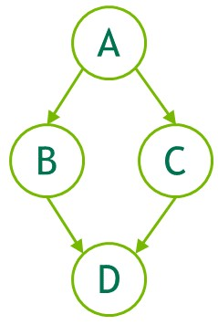
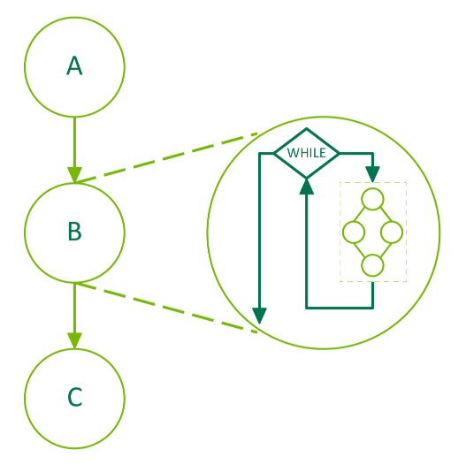
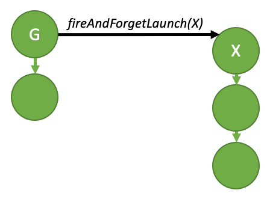
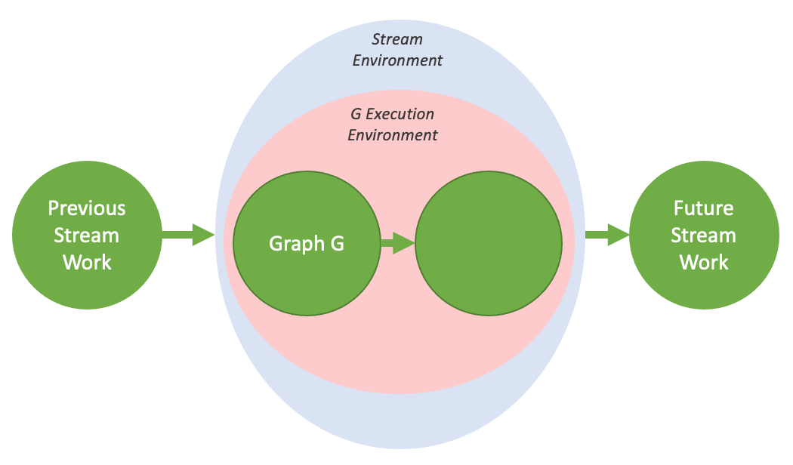

CUDA 그래프는 CUDA에서 작업을 제출하기 위한 또 다른 모델을 제공합니다. 그래프는 실행과는 별도로 정의되는, 커널 런치, 데이터 이동 등과 같은 일련의 연산이 의존성으로 연결된 것입니다. 이를 통해 그래프를 한 번 정의한 뒤 반복적으로 런치할 수 있습니다. 그래프의 정의를 실행과 분리하면 여러 최적화가 가능해집니다. 첫째, 설정의 상당 부분을 미리 수행하기 때문에 스트림에 비해 CPU 런치 비용이 줄어듭니다. 둘째, 전체 워크플로를 CUDA에 제시함으로써, 스트림의 조각별 작업 제출 메커니즘으로는 불가능할 수도 있는 최적화를 가능하게 합니다.
그래프로 가능한 최적화를 확인하기 위해, 스트림에서 어떤 일이 발생하는지 생각해 봅시다. 스트림에 커널을 배치하면, 호스트 드라이버는 GPU에서 커널 실행을 준비하기 위해 일련의 연산을 수행합니다. 커널을 설정하고 런치하는 데 필요한 이러한 연산은 발행되는 각 커널마다 지불해야 하는 오버헤드 비용입니다. 실행 시간이 짧은 GPU 커널의 경우, 이 오버헤드 비용은 전체 엔드투엔드 실행 시간에서 상당한 비율을 차지할 수 있습니다. 여러 번 런치될 워크플로를 포함하는 CUDA 그래프를 생성하면, 이러한 오버헤드 비용을 인스턴스화 동안 전체 그래프에 대해 한 번만 지불할 수 있으며, 이후 그래프 자체를 매우 적은 오버헤드로 반복 실행할 수 있습니다.
4.2.1. 그래프 구조#
연산은 그래프에서 노드를 형성합니다. 연산 간의 의존성은 에지입니다. 이러한 의존성은 연산의 실행 순서를 제한합니다.
연산은 자신이 의존하는 노드가 완료되는 즉시 언제든 스케줄될 수 있습니다. 스케줄링은 CUDA 시스템에 맡겨집니다.
4.2.1.1. 노드 유형#
그래프 노드는 다음 중 하나일 수 있습니다:
커널
CPU function 호출
메모리 복사
memset
빈 노드
CUDA Event 대기
CUDA Event 기록
자식 그래프: 다음 그림과 같이 별도의 중첩된 그래프를 실행합니다.

그림 21 자식 그래프 예시#
4.2.1.2. 에지 데이터#
CUDA 12.3에서는 CUDA 그래프에 에지 데이터가 도입되었습니다. 현재 비-기본 에지 데이터의 유일한 용도는 프로그래밍 방식 종속 런치를 활성화하는 것입니다.
일반적으로 에지 데이터는 에지로 지정된 의존성을 수정하며 세 부분으로 구성됩니다: 나가는 포트(outgoing port), 들어오는 포트(incoming port), 그리고 타입(type). 나가는 포트는 연관된 에지가 언제 트리거되는지 지정합니다. 들어오는 포트는 노드의 어떤 부분이 연관된 에지에 의존하는지 지정합니다. 타입은 엔드포인트 간의 관계를 수정합니다.
포트 값은 노드 타입과 방향에 따라 달라지며, 에지 타입은 특정 노드 타입으로 제한될 수 있습니다. 모든 경우에서, 0으로 초기화된 에지 데이터는 기본 동작을 나타냅니다. 나가는 포트 0은 전체 작업을 기다리고, 들어오는 포트 0은 전체 작업을 차단하며, 에지 타입 0은 메모리 동기화 동작을 갖는 완전한 의존성과 연관됩니다.
에지 데이터는 다양한 그래프 API에서 연관된 노드에 대한 병렬 배열을 통해 선택적으로 지정됩니다. 입력 매개변수로
생략되면 0으로 초기화된 데이터가 사용됩니다. 출력(쿼리) 매개변수로 생략되면, 무시되는 에지 데이터가 모두 0으로 초기화된 경우 API는 이를 허용하며,
호출이 정보를 폐기하게 되는 경우 cudaErrorLossyQuery를 반환합니다.
에지 데이터는 일부 스트림 캡처 API에서도 사용할 수 있습니다: cudaStreamBeginCaptureToGraph(), cudaStreamGetCaptureInfo(),
그리고 cudaStreamUpdateCaptureDependencies(). 이러한 경우에는 아직 downstream 노드가 없습니다. 데이터는
댕글링 에지(하프 에지)에 연관되며, 이는 이후에 캡처된 노드에 연결되거나 스트림 캡처 종료 시 폐기됩니다.
일부 에지 타입은 upstream 노드의 완전한 완료를 기다리지 않는다는 점에 유의하십시오. 이러한 에지는
스트림 캡처가 원본 스트림에 완전히 재결합되었는지 고려할 때 무시되며, 캡처 종료 시 폐기될 수 없습니다.
Stream Capture를 참조하십시오.
어떤 노드 타입도 추가적인 들어오는 포트를 정의하지 않으며, 커널 노드만 추가적인 나가는 포트를 정의합니다. 또한
기본이 아닌 의존성 타입은 하나, cudaGraphDependencyTypeProgrammatic,가 있으며, 이는 두 커널 노드 간에 프로그래밍 방식 종속 런치를 활성화하는 데 사용됩니다.
4.2.2. 그래프 빌드 및 실행#
그래프를 사용한 작업 제출은 정의, 인스턴스화, 실행의 세 가지 뚜렷한 단계로 구분됩니다.
정의 또는 생성 단계에서는, 프로그램이 그래프의 연산에 대한 설명과 그 사이의 의존성을 함께 생성합니다.
인스턴스화는 그래프 템플릿의 스냅샷을 생성하고, 이를 검증하며, 실행 시 수행해야 하는 작업을 최소화하는 것을 목표로 작업의 설정 및 초기화의 상당 부분을 수행합니다. 그 결과로 생성된 인스턴스는 실행 가능한 그래프(executable graph)로 알려져 있습니다.
실행 가능한 그래프는 다른 CUDA 작업과 유사하게 스트림에 런치될 수 있습니다. 인스턴스화를 반복하지 않고도 원하는 횟수만큼 런치할 수 있습니다.
4.2.2.1. 그래프 생성#
그래프는 두 가지 메커니즘을 통해 생성할 수 있습니다. 명시적 Graph API를 사용하거나, stream capture를 통해 생성합니다.
4.2.2.1.1. Graph API#
다음은 아래 그래프를 생성하는 예시입니다(선언 및 기타 보일러플레이트 코드는 생략). 그래프를 생성하기 위해 cudaGraphCreate()를 사용하고, 커널 노드와 그 의존성을 추가하기 위해 cudaGraphAddNode()를 사용하는 점에 유의하십시오. CUDA Runtime API 문서에는 노드와 의존성을 추가하는 데 사용할 수 있는 모든 function이 나열되어 있습니다.
{kind=link}

Figure 22 Graph API를 사용한 그래프 생성 예시#
// Create the graph - it starts out empty
cudaGraphCreate(&graph, 0);
// Create the nodes and their dependencies
cudaGraphNode_t nodes[4];
cudaGraphNodeParams kParams = { cudaGraphNodeTypeKernel };
kParams.kernel.func = (void *)kernelName;
kParams.kernel.gridDim.x = kParams.kernel.gridDim.y = kParams.kernel.gridDim.z = 1;
kParams.kernel.blockDim.x = kParams.kernel.blockDim.y = kParams.kernel.blockDim.z = 1;
cudaGraphAddNode(&nodes[0], graph, NULL, NULL, 0, &kParams);
cudaGraphAddNode(&nodes[1], graph, &nodes[0], NULL, 1, &kParams);
cudaGraphAddNode(&nodes[2], graph, &nodes[0], NULL, 1, &kParams);
cudaGraphAddNode(&nodes[3], graph, &nodes[1], NULL, 2, &kParams);
위 예시는 매우 단순한 그래프의 생성을 설명하기 위해, 그 사이에 의존성이 있는 네 개의 커널 노드를 보여줍니다. 일반적인 사용자 애플리케이션에서는 cudaGraphAddMemcpyNode() 등과 같은 메모리 연산을 위한 노드도 추가되어야 합니다. 노드를 추가하기 위한 모든 그래프 API function의 전체 참조는 CUDA Runtime API 문서를 참조하십시오.
4.2.2.1.2. 스트림 캡처(Stream Capture)#
스트림 캡처는 기존의 스트림 기반 API로부터 그래프를 생성하는 메커니즘을 제공합니다. 기존 코드를 포함하여 스트림으로 작업을 런치하는 코드 섹션은 cudaStreamBeginCapture() 및 cudaStreamEndCapture() 호출로 감쌀 수 있습니다. 아래를 참조하십시오.
cudaGraph_t graph;
cudaStreamBeginCapture(stream);
kernel_A<<< ..., stream >>>(...);
kernel_B<<< ..., stream >>>(...);
libraryCall(stream);
kernel_C<<< ..., stream >>>(...);
cudaStreamEndCapture(stream, &graph);
cudaStreamBeginCapture() 호출은 스트림을 캡처 모드로 전환합니다. 스트림이 캡처되는 동안, 스트림으로 런치된 작업은 실행을 위해 큐에 등록되지 않습니다. 대신 점진적으로 빌드업되는 내부 그래프에 추가됩니다. 그런 다음 cudaStreamEndCapture()을 호출하여 이 그래프가 반환되며, 이 호출은 또한 해당 스트림의 캡처 모드를 종료합니다. 스트림 캡처로 활발히 구성 중인 그래프를 캡처 그래프(capture graph)라고 합니다.
스트림 캡처는 다음을 제외한 모든 CUDA 스트림에서 사용할 수 있습니다 cudaStreamLegacy (“NULL 스트림”). 이는 사용될 수 있습니다 에서 사용될 수 있습니다 cudaStreamPerThread. 프로그램이 레거시 스트림을 사용하고 있다면, 기능적 변경 없이 스트림 0을 스레드별 스트림으로 재정의하는 것이 가능할 수 있습니다. 다음을 참조하십시오 블로킹 및 논블로킹 스트림과 기본 스트림.
스트림이 캡처되고 있는지 여부는 다음으로 질의할 수 있습니다 cudaStreamIsCapturing().
작업은 다음을 사용하여 기존 그래프로 캡처할 수 있습니다 cudaStreamBeginCaptureToGraph(). 내부 그래프로 캡처하는 대신, 작업은 사용자가 제공한 그래프로 캡처됩니다.
4.2.2.1.2.1. 스트림 간 의존성과 이벤트#
스트림 캡처는, 대기 대상 이벤트가 동일한 캡처 그래프에 기록되었다는 전제하에, cudaEventRecord() 및 cudaStreamWaitEvent()로 표현되는 스트림 간 의존성을 처리할 수 있습니다.
캡처 모드에 있는 스트림에서 이벤트가 기록되면, 캡처된 이벤트(captured event)가 생성됩니다. 캡처된 이벤트는 캡처 그래프 내의 노드 집합을 나타냅니다.
캡처된 이벤트를 스트림이 대기하면, 스트림이 아직 캡처 모드가 아니라면 캡처 모드로 전환되며, 스트림의 다음 항목은 캡처된 이벤트의 노드들에 대한 추가 의존성을 갖게 됩니다. 그러면 두 스트림은 동일한 캡처 그래프로 캡처됩니다.
스트림 캡처에서 스트림 간 의존성이 존재하는 경우에도, cudaStreamEndCapture()는 cudaStreamBeginCapture()가 호출된 동일한 스트림에서 여전히 호출되어야 하며, 이것이 원본 스트림(origin stream)입니다. 이벤트 기반 의존성으로 인해 동일한 캡처 그래프로 캡처되고 있는 다른 모든 스트림 역시 원본 스트림으로 다시 합류해야 합니다. 이는 아래에 예시되어 있습니다. 동일한 캡처 그래프로 캡처되는 모든 스트림은 cudaStreamEndCapture() 시 캡처 모드에서 해제됩니다. 원본 스트림으로 다시 합류하지 않으면 전체 캡처 작업이 실패합니다.
// stream1 is the origin stream
cudaStreamBeginCapture(stream1);
kernel_A<<< ..., stream1 >>>(...);
// Fork into stream2
cudaEventRecord(event1, stream1);
cudaStreamWaitEvent(stream2, event1);
kernel_B<<< ..., stream1 >>>(...);
kernel_C<<< ..., stream2 >>>(...);
// Join stream2 back to origin stream (stream1)
cudaEventRecord(event2, stream2);
cudaStreamWaitEvent(stream1, event2);
kernel_D<<< ..., stream1 >>>(...);
// End capture in the origin stream
cudaStreamEndCapture(stream1, &graph);
// stream1 and stream2 no longer in capture mode
위 코드에서 반환된 그래프는 Figure 22에 나와 있습니다.
참고
스트림이 캡처 모드에서 해제되면, 스트림의 다음 비-캡처 항목(있는 경우)은 중간 항목들이 제거되었더라도, 직전에 존재하는 가장 최근의 비-캡처 항목에 대한 의존성을 여전히 갖게 됩니다.
4.2.2.1.2.2. 금지 및 미처리 작업#
캡처 중인 스트림 또는 캡처된 이벤트는 실행을 위해 스케줄된 항목을 나타내지 않으므로, 이를 동기화하거나 실행 상태를 질의하는 것은 유효하지 않습니다. 또한, 어떤 연관 스트림이든 캡처 모드에 있을 때의 디바이스 또는 컨텍스트 핸들처럼 활성 스트림 캡처를 포함하는 더 넓은 핸들에 대해 실행 상태를 질의하거나 동기화하는 것 또한 유효하지 않습니다.
동일한 컨텍스트의 어떤 스트림이든 캡처 중이고, 해당 스트림이 cudaStreamNonBlocking로 생성되지 않았다면, 레거시 스트림을 사용하려는 모든 시도는 유효하지 않습니다. 이는 레거시 스트림 핸들이 항상 이러한 다른 스트림들을 포함하기 때문입니다. 레거시 스트림에 엔큐(enqueue)하면 캡처되고 있는 스트림들에 대한 의존성이 생성되며, 이를 질의하거나 동기화하면 캡처되고 있는 스트림들을 질의하거나 동기화하게 됩니다.
따라서 이 경우 동기 API를 호출하는 것 또한 유효하지 않습니다. 동기 API의 한 예로는, 레거시 스트림에 작업을 엔큐하고 반환하기 전에 해당 스트림에서 동기화하는 cudaMemcpy()가 있습니다.
참고
일반적인 규칙으로, 의존성 관계가 캡처된 항목과 캡처되지 않고 대신 실행을 위해 엔큐된 항목을 연결하게 되는 경우, CUDA는 그 의존성을 무시하기보다는 오류를 반환하는 것을 선호합니다. 예외적으로, 스트림을 캡처 모드로 전환하거나 캡처 모드에서 해제하는 경우에는 예외가 적용됩니다. 이는 모드 전환 직전과 직후에 스트림에 추가된 항목들 사이의 의존성 관계를 끊습니다.
캡처되고 있으며 이벤트와는 다른 캡처 그래프와 연관된 스트림에서, 캡처된 이벤트를 기다림으로써 두 개의 분리된 캡처 그래프를 병합하는 것은 유효하지 않습니다. 캡처되고 있는 스트림에서, cudaEventWaitExternal 플래그를 지정하지 않고 캡처되지 않은 이벤트를 기다리는 것도 유효하지 않습니다.
스트림에 비동기 작업을 엔큐하는(enqueue) 일부 API는 현재 그래프에서 지원되지 않으며, cudaStreamAttachMemAsync()와 같이 캡처되고 있는 스트림으로 호출되면 오류를 반환합니다.
4.2.2.1.2.3. 무효화#
스트림 캡처 중에 유효하지 않은 작업이 시도되면, 연관된 모든 캡처 그래프가 무효화됩니다. 캡처 그래프가 무효화되면, cudaStreamEndCapture()로 스트림 캡처를 종료할 때까지, 캡처되고 있는 모든 스트림이나 그래프와 연관된 캡처된 이벤트를 추가로 사용하는 것은 유효하지 않으며 오류를 반환합니다. 이 호출은 연관된 스트림들을 캡처 모드에서 해제하지만, 오류 값과 NULL 그래프도 함께 반환합니다.
4.2.2.1.2.4. 캡처 인트로스펙션(Capture Introspection)#
활성 스트림 캡처 작업은 cudaStreamGetCaptureInfo()를 사용하여 검사할 수 있습니다. 이를 통해 사용자는 캡처의 상태, 캡처에 대한 고유한(프로세스별) ID, 기반 그래프 객체, 그리고 스트림에서 다음으로 캡처될 노드에 대한 의존성/에지 데이터를 얻을 수 있습니다. 이 의존성 정보는 스트림에서 마지막으로 캡처된 노드(들)에 대한 핸들을 얻는 데 사용할 수 있습니다.
4.2.2.1.3. 종합#
Figure 22의 예시는 작은 그래프를 개념적으로 보여주기 위한 단순한 예시입니다. CUDA graphs를 사용하는 애플리케이션에서는 graph API 또는 stream capture를 사용하는 데 더 많은 복잡성이 있습니다. 다음 코드 스니펫은 간단한 2단계 리덕션 알고리즘을 실행하기 위한 CUDA 그래프를 만들 때 Graph API와 Stream Capture를 나란히 비교하여 보여줍니다.
Figure 23은 이 CUDA 그래프의 일러스트레이션이며, 아래 코드에 cudaGraphDebugDotPrint 함수를 적용해 생성한 뒤 가독성을 위해 약간 조정하고, Graphviz를 사용해 렌더링한 것입니다.

Figure 23 2단계 리덕션 커널을 사용하는 CUDA 그래프 예시#
void cudaGraphsManual(float *inputVec_h,
float *inputVec_d,
double *outputVec_d,
double *result_d,
size_t inputSize,
size_t numOfBlocks)
{
cudaStream_t streamForGraph;
cudaGraph_t graph;
std::vector<cudaGraphNode_t> nodeDependencies;
cudaGraphNode_t memcpyNode, kernelNode, memsetNode;
double result_h = 0.0;
cudaStreamCreate(&streamForGraph));
cudaKernelNodeParams kernelNodeParams = {0};
cudaMemcpy3DParms memcpyParams = {0};
cudaMemsetParams memsetParams = {0};
memcpyParams.srcArray = NULL;
memcpyParams.srcPos = make_cudaPos(0, 0, 0);
memcpyParams.srcPtr = make_cudaPitchedPtr(inputVec_h, sizeof(float) * inputSize, inputSize, 1);
memcpyParams.dstArray = NULL;
memcpyParams.dstPos = make_cudaPos(0, 0, 0);
memcpyParams.dstPtr = make_cudaPitchedPtr(inputVec_d, sizeof(float) * inputSize, inputSize, 1);
memcpyParams.extent = make_cudaExtent(sizeof(float) * inputSize, 1, 1);
memcpyParams.kind = cudaMemcpyHostToDevice;
memsetParams.dst = (void *)outputVec_d;
memsetParams.value = 0;
memsetParams.pitch = 0;
memsetParams.elementSize = sizeof(float); // elementSize can be max 4 bytes
memsetParams.width = numOfBlocks * 2;
memsetParams.height = 1;
cudaGraphCreate(&graph, 0);
cudaGraphAddMemcpyNode(&memcpyNode, graph, NULL, 0, &memcpyParams);
cudaGraphAddMemsetNode(&memsetNode, graph, NULL, 0, &memsetParams);
nodeDependencies.push_back(memsetNode);
nodeDependencies.push_back(memcpyNode);
void *kernelArgs[4] = {(void *)&inputVec_d, (void *)&outputVec_d, &inputSize, &numOfBlocks};
kernelNodeParams.func = (void *)reduce;
kernelNodeParams.gridDim = dim3(numOfBlocks, 1, 1);
kernelNodeParams.blockDim = dim3(THREADS_PER_BLOCK, 1, 1);
kernelNodeParams.sharedMemBytes = 0;
kernelNodeParams.kernelParams = (void **)kernelArgs;
kernelNodeParams.extra = NULL;
cudaGraphAddKernelNode(
&kernelNode, graph, nodeDependencies.data(), nodeDependencies.size(), &kernelNodeParams);
nodeDependencies.clear();
nodeDependencies.push_back(kernelNode);
memset(&memsetParams, 0, sizeof(memsetParams));
memsetParams.dst = result_d;
memsetParams.value = 0;
memsetParams.elementSize = sizeof(float);
memsetParams.width = 2;
memsetParams.height = 1;
cudaGraphAddMemsetNode(&memsetNode, graph, NULL, 0, &memsetParams);
nodeDependencies.push_back(memsetNode);
memset(&kernelNodeParams, 0, sizeof(kernelNodeParams));
kernelNodeParams.func = (void *)reduceFinal;
kernelNodeParams.gridDim = dim3(1, 1, 1);
kernelNodeParams.blockDim = dim3(THREADS_PER_BLOCK, 1, 1);
kernelNodeParams.sharedMemBytes = 0;
void *kernelArgs2[3] = {(void *)&outputVec_d, (void *)&result_d, &numOfBlocks};
kernelNodeParams.kernelParams = kernelArgs2;
kernelNodeParams.extra = NULL;
cudaGraphAddKernelNode(
&kernelNode, graph, nodeDependencies.data(), nodeDependencies.size(), &kernelNodeParams);
nodeDependencies.clear();
nodeDependencies.push_back(kernelNode);
memset(&memcpyParams, 0, sizeof(memcpyParams));
memcpyParams.srcArray = NULL;
memcpyParams.srcPos = make_cudaPos(0, 0, 0);
memcpyParams.srcPtr = make_cudaPitchedPtr(result_d, sizeof(double), 1, 1);
memcpyParams.dstArray = NULL;
memcpyParams.dstPos = make_cudaPos(0, 0, 0);
memcpyParams.dstPtr = make_cudaPitchedPtr(&result_h, sizeof(double), 1, 1);
memcpyParams.extent = make_cudaExtent(sizeof(double), 1, 1);
memcpyParams.kind = cudaMemcpyDeviceToHost;
cudaGraphAddMemcpyNode(&memcpyNode, graph, nodeDependencies.data(), nodeDependencies.size(), &memcpyParams);
nodeDependencies.clear();
nodeDependencies.push_back(memcpyNode);
cudaGraphNode_t hostNode;
cudaHostNodeParams hostParams = {0};
hostParams.fn = myHostNodeCallback;
callBackData_t hostFnData;
hostFnData.data = &result_h;
hostFnData.fn_name = "cudaGraphsManual";
hostParams.userData = &hostFnData;
cudaGraphAddHostNode(&hostNode, graph, nodeDependencies.data(), nodeDependencies.size(), &hostParams);
}
void cudaGraphsUsingStreamCapture(float *inputVec_h,
float *inputVec_d,
double *outputVec_d,
double *result_d,
size_t inputSize,
size_t numOfBlocks)
{
cudaStream_t stream1, stream2, stream3, streamForGraph;
cudaEvent_t forkStreamEvent, memsetEvent1, memsetEvent2;
cudaGraph_t graph;
double result_h = 0.0;
cudaStreamCreate(&stream1);
cudaStreamCreate(&stream2);
cudaStreamCreate(&stream3);
cudaStreamCreate(&streamForGraph);
cudaEventCreate(&forkStreamEvent);
cudaEventCreate(&memsetEvent1);
cudaEventCreate(&memsetEvent2);
cudaStreamBeginCapture(stream1, cudaStreamCaptureModeGlobal);
cudaEventRecord(forkStreamEvent, stream1);
cudaStreamWaitEvent(stream2, forkStreamEvent, 0);
cudaStreamWaitEvent(stream3, forkStreamEvent, 0);
cudaMemcpyAsync(inputVec_d, inputVec_h, sizeof(float) * inputSize, cudaMemcpyDefault, stream1);
cudaMemsetAsync(outputVec_d, 0, sizeof(double) * numOfBlocks, stream2);
cudaEventRecord(memsetEvent1, stream2);
cudaMemsetAsync(result_d, 0, sizeof(double), stream3);
cudaEventRecord(memsetEvent2, stream3);
cudaStreamWaitEvent(stream1, memsetEvent1, 0);
reduce<<<numOfBlocks, THREADS_PER_BLOCK, 0, stream1>>>(inputVec_d, outputVec_d, inputSize, numOfBlocks);
cudaStreamWaitEvent(stream1, memsetEvent2, 0);
reduceFinal<<<1, THREADS_PER_BLOCK, 0, stream1>>>(outputVec_d, result_d, numOfBlocks);
cudaMemcpyAsync(&result_h, result_d, sizeof(double), cudaMemcpyDefault, stream1);
callBackData_t hostFnData = {0};
hostFnData.data = &result_h;
hostFnData.fn_name = "cudaGraphsUsingStreamCapture";
cudaHostFn_t fn = myHostNodeCallback;
cudaLaunchHostFunc(stream1, fn, &hostFnData);
cudaStreamEndCapture(stream1, &graph);
}
4.2.2.2. 그래프 인스턴스화#
graph API 또는 stream capture를 사용하여 그래프가 생성되면, 이후 실행 가능한 그래프(executable graph)를 생성하기 위해 그래프를 인스턴스화해야 하며, 그런 다음 이를 실행(launch)할 수 있습니다. cudaGraph_t graph가 성공적으로 생성되었다고 가정하면, 다음 코드는 그래프를 인스턴스화하고 실행 가능한 그래프 cudaGraphExec_t graphExec를 생성합니다:
cudaGraphExec_t graphExec;
cudaGraphInstantiate(&graphExec, graph, NULL, NULL, 0);
4.2.2.3. 그래프 실행#
그래프가 생성되고 인스턴스화되어 실행 가능한 그래프가 만들어지면, 이를 실행(launch)할 수 있습니다. cudaGraphExec_t graphExec가 성공적으로 생성되었다고 가정하면, 다음 코드 스니펫은 지정된 스트림으로 그래프를 실행합니다:
cudaGraphLaunch(graphExec, stream);
이를 모두 종합하고 섹션 4.2.2.1.2의 stream capture 예시를 사용하면, 다음 코드 스니펫은 그래프를 생성하고, 인스턴스화한 뒤, 실행합니다:
cudaGraph_t graph;
cudaStreamBeginCapture(stream);
kernel_A<<< ..., stream >>>(...);
kernel_B<<< ..., stream >>>(...);
libraryCall(stream);
kernel_C<<< ..., stream >>>(...);
cudaStreamEndCapture(stream, &graph);
cudaGraphExec_t graphExec;
cudaGraphInstantiate(&graphExec, graph, NULL, NULL, 0);
cudaGraphLaunch(graphExec, stream);
4.2.3. 인스턴스화된 그래프 업데이트#
워크플로가 변경되면 그래프는 오래된 상태가 되며 수정해야 합니다. 그래프 구조(예: 토폴로지 또는 노드 타입)에 대한 주요 변경은 토폴로지 관련 최적화를 다시 적용해야 하므로 재-인스턴스화가 필요합니다. 하지만 그래프 토폴로지는 동일하게 유지한 채로, 노드 매개변수(예: 커널 매개변수 및 메모리 주소)만 변경되는 경우가 흔합니다. 이 경우 CUDA는 전체 그래프를 다시 빌드하지 않고 특정 노드 매개변수를 제자리(in-place)에서 수정할 수 있는 경량의 “Graph Update” 메커니즘을 제공하며, 이는 재-인스턴스화보다 훨씬 효율적입니다.
업데이트는 다음 번 그래프 실행 시에 적용되므로, 업데이트 시점에 실행 중이더라도 이전 그래프 실행에는 영향을 주지 않습니다. 그래프는 업데이트 및 재실행을 반복해서 수행할 수 있으므로, 하나의 스트림에 여러 번의 업데이트/실행을 큐잉할 수 있습니다.
CUDA는 인스턴스화된 그래프 매개변수를 업데이트하기 위한 두 가지 메커니즘(전체 그래프 업데이트와 개별 노드 업데이트)을 제공합니다. 전체 그래프 업데이트는 사용자가 토폴로지가 동일한 cudaGraph_t 객체를 제공할 수 있게 하며, 해당 객체의 노드에는 업데이트된 매개변수가 포함됩니다. 개별 노드 업데이트는 사용자가 개별 노드의 매개변수를 명시적으로 업데이트할 수 있게 합니다. 많은 수의 노드를 업데이트하거나, 호출자가 그래프 토폴로지를 알 수 없을 때(즉, 그래프가 라이브러리 호출의 stream capture 결과로 생성되었을 때)에는 업데이트된 cudaGraph_t를 사용하는 것이 더 편리합니다. 변경 수가 적고 사용자가 업데이트가 필요한 노드들의 핸들을 가지고 있을 때에는 개별 노드 업데이트를 사용하는 것이 바람직합니다. 개별 노드 업데이트는 변경되지 않은 노드들에 대한 토폴로지 검사 및 비교를 건너뛰므로, 많은 경우 더 효율적일 수 있습니다.
CUDA는 또한 현재 매개변수에 영향을 주지 않으면서 개별 노드를 활성화/비활성화할 수 있는 메커니즘도 제공합니다.
다음 섹션에서는 각 접근 방식을 더 자세히 설명합니다.
4.2.3.1. 전체 그래프 업데이트#
cudaGraphExecUpdate()는 인스턴스화된 그래프(“원본 그래프”)를 토폴로지가 동일한 그래프(“업데이트 그래프”)의 매개변수로 업데이트할 수 있게 합니다. 업데이트 그래프의 토폴로지는 cudaGraphExec_t를 인스턴스화하는 데 사용된 원본 그래프와 동일해야 합니다. 또한 의존성이 지정되는 순서도 일치해야 합니다. 마지막으로, CUDA는 싱크 노드(의존성이 없는 노드)를 일관되게 정렬할 필요가 있습니다. CUDA는 일관된 싱크 노드 정렬을 달성하기 위해 특정 API 호출의 순서에 의존합니다.
더 명시적으로, 다음 규칙을 따르면 cudaGraphExecUpdate()는 원본 그래프와 업데이트 그래프의 노드들을 결정적으로(deterministically) 페어링합니다:
임의의 캡처 중인 스트림에 대해, 해당 스트림에서 동작하는 API 호출은 이벤트 대기 및 노드 생성에 직접 대응하지 않는 다른 API 호출을 포함하여 동일한 순서로 이루어져야 합니다.
주어진 그래프 노드의 들어오는 에지(incoming edge)를 직접 조작하는 API 호출(캡처된 스트림 API, 노드 추가 API, 에지 추가/제거 API 포함)은 동일한 순서로 이루어져야 합니다. 또한 이러한 API에 의존성이 배열로 지정되는 경우, 그 배열 내부에서 의존성이 지정되는 순서도 일치해야 합니다.
싱크 노드는 일관되게 정렬되어야 합니다. 싱크 노드는
cudaGraphExecUpdate()호출 시점에 최종 그래프에서 종속 노드/나가는 에지(outgoing edge)가 없는 노드입니다. 다음 작업들은(존재하는 경우) 싱크 노드 정렬에 영향을 미치며, (결합된 집합으로서) 동일한 순서로 수행되어야 합니다:싱크 노드를 생성하는 노드 추가 API.
노드가 싱크 노드가 되도록 하는 에지 제거.
캡처 중인 스트림의 의존성 집합에서 싱크 노드를 제거하는 경우의
cudaStreamUpdateCaptureDependencies().cudaStreamEndCapture().
다음 예시는 이 API를 사용하여 인스턴스화된 그래프를 업데이트하는 방법을 보여줍니다:
cudaGraphExec_t graphExec = NULL;
for (int i = 0; i < 10; i++) {
cudaGraph_t graph;
cudaGraphExecUpdateResult updateResult;
cudaGraphNode_t errorNode;
// In this example we use stream capture to create the graph.
// You can also use the Graph API to produce a graph.
cudaStreamBeginCapture(stream, cudaStreamCaptureModeGlobal);
// Call a user-defined, stream based workload, for example
do_cuda_work(stream);
cudaStreamEndCapture(stream, &graph);
// If we've already instantiated the graph, try to update it directly
// and avoid the instantiation overhead
if (graphExec != NULL) {
// If the graph fails to update, errorNode will be set to the
// node causing the failure and updateResult will be set to a
// reason code.
cudaGraphExecUpdate(graphExec, graph, &errorNode, &updateResult);
}
// Instantiate during the first iteration or whenever the update
// fails for any reason
if (graphExec == NULL || updateResult != cudaGraphExecUpdateSuccess) {
// If a previous update failed, destroy the cudaGraphExec_t
// before re-instantiating it
if (graphExec != NULL) {
cudaGraphExecDestroy(graphExec);
}
// Instantiate graphExec from graph. The error node and
// error message parameters are unused here.
cudaGraphInstantiate(&graphExec, graph, NULL, NULL, 0);
}
cudaGraphDestroy(graph);
cudaGraphLaunch(graphExec, stream);
cudaStreamSynchronize(stream);
}
일반적인 워크플로는 stream capture 또는 graph API 중 하나를 사용하여 초기 cudaGraph_t를 생성하는 것입니다. 그런 다음 cudaGraph_t를 평소처럼 인스턴스화하고 실행합니다. 초기 실행 이후에는, 초기 그래프와 동일한 방법으로 새로운 cudaGraph_t를 생성하고 cudaGraphExecUpdate()를 호출합니다. 그래프 업데이트가 성공하면(위 예시의 updateResult 매개변수로 표시됨) 업데이트된 cudaGraphExec_t를 실행합니다. 어떤 이유로든 업데이트가 실패하면, cudaGraphExecDestroy() 및 cudaGraphInstantiate()를 호출하여 원본 cudaGraphExec_t를 파기하고 새 것을 인스턴스화합니다.
cudaGraph_t 노드를 직접 업데이트(즉, cudaGraphKernelNodeSetParams() 사용)한 다음 cudaGraphExec_t를 업데이트하는 것도 가능하지만, 다음 섹션에서 다루는 명시적 노드 업데이트 API를 사용하는 것이 더 효율적입니다.
조건부 핸들 플래그와 기본값은 그래프 업데이트의 일부로 업데이트됩니다.
사용법 및 현재 제한 사항에 대한 자세한 내용은 Graph API를 참조하십시오.
4.2.3.2. 개별 노드 업데이트#
인스턴스화된 그래프 노드 매개변수는 직접 업데이트할 수 있습니다. 이렇게 하면 인스턴스화 오버헤드뿐만 아니라 새로운 cudaGraph_t를 생성하는 오버헤드도 제거됩니다. 업데이트가 필요한 노드 수가 그래프의 전체 노드 수에 비해 적다면, 노드를 개별적으로 업데이트하는 것이 더 좋습니다. cudaGraphExec_t 노드를 업데이트하는 데 사용할 수 있는 방법은 다음과 같습니다:
API |
노드 타입 |
|---|---|
|
커널 노드 |
|
메모리 복사 노드 |
|
메모리 설정 노드 |
|
호스트 노드 |
|
자식 그래프 노드 |
|
이벤트 기록 노드 |
|
이벤트 대기 노드 |
|
외부 세마포어 신호 노드 |
|
외부 세마포어 대기 노드 |
사용법 및 현재 제한 사항에 대한 자세한 내용은 Graph API를 참조하십시오.
4.2.3.3. 개별 노드 활성화#
인스턴스화된 그래프의 커널, memset 및 memcpy 노드는 cudaGraphNodeSetEnabled() API를 사용하여 활성화하거나 비활성화할 수 있습니다. 이를 통해 원하는 기능의 상위 집합을 포함하는 그래프를 생성하고, 각 실행(launch)마다 커스터마이즈할 수 있습니다. 노드의 활성화 상태는 cudaGraphNodeGetEnabled() API를 사용하여 쿼리할 수 있습니다.
비활성화된 노드는 다시 활성화되기 전까지 기능적으로 빈 노드와 동등합니다. 노드 매개변수는 노드를 활성화/비활성화해도 영향을 받지 않습니다. 활성화 상태는 개별 노드 업데이트 또는 cudaGraphExecUpdate()를 사용한 전체 그래프 업데이트의 영향을 받지 않습니다. 노드가 비활성화된 동안의 매개변수 업데이트는 노드가 다시 활성화될 때 적용됩니다.
사용법 및 현재 제한 사항에 대한 자세한 내용은 Graph API를 참조하십시오.
4.2.3.4. 그래프 업데이트 제한 사항#
커널 노드:
function의 소유 컨텍스트는 변경할 수 없습니다.
원래 CUDA 동적 병렬 처리를 사용하지 않았던 function을 사용하는 노드는 CUDA 동적 병렬 처리를 사용하는 function으로 업데이트할 수 없습니다.
cudaMemset 및 cudaMemcpy 노드:
피연산자(operand)가 할당/매핑된 CUDA 디바이스는 변경할 수 없습니다.
소스/대상 메모리는 원래 소스/대상 메모리와 동일한 컨텍스트에서 할당되어야 합니다.
1D
cudaMemset/cudaMemcpy노드만 변경할 수 있습니다.
추가 memcpy 노드 제한 사항:
소스 또는 대상 메모리 타입(즉,
cudaPitchedPtr,cudaArray_t등)이나 전송 타입(즉,cudaMemcpyKind)을 변경하는 것은 지원되지 않습니다.
외부 세마포어 대기 노드 및 기록 노드:
세마포어 수를 변경하는 것은 지원되지 않습니다.
조건부 노드:
핸들 생성 및 할당 순서는 그래프 간에 일치해야 합니다.
노드 매개변수를 변경하는 것은 지원되지 않습니다(즉, 조건부의 그래프 수, 노드 컨텍스트 등).
조건부 본문 그래프 내 노드의 매개변수를 변경하는 것은 위 규칙이 적용됩니다.
메모리 노드:
업데이트할 수는 없습니다.
cudaGraphExec_t로cudaGraph_t만약cudaGraph_t현재 다른 것으로 인스턴스화되어 있습니다cudaGraphExec_t.
호스트 노드, 이벤트 기록 노드 또는 이벤트 대기 노드 업데이트에는 제한이 없습니다.
4.2.4. 조건부 그래프 노드#
조건부 노드는 조건부 노드 내에 포함된 그래프의 조건부 실행과 루핑(looping)을 허용합니다. 이를 통해 동적 및 반복적 워크플로를 그래프 내에서 완전히 표현할 수 있으며, 호스트 CPU가 다른 작업을 병렬로 수행할 수 있도록 해줍니다.
조건 값의 평가는 조건부 노드의 의존성이 충족되었을 때 디바이스에서 수행됩니다. 조건부 노드는 다음 타입 중 하나일 수 있습니다:
조건부 IF 노드는 노드가 실행될 때 조건 값이 0이 아니면 본문 그래프를 한 번 실행합니다. 선택적으로 두 번째 본문 그래프를 제공할 수 있으며, 이 그래프는 노드가 실행될 때 조건 값이 0이면 한 번 실행됩니다.
조건부 WHILE 노드는 노드가 실행될 때 조건 값이 0이 아니면 본문 그래프를 실행하며, 조건 값이 0이 될 때까지 본문 그래프 실행을 계속합니다.
조건부 SWITCH 노드는 조건 값이 n과 같으면 0 인덱스 기반의 n번째 본문 그래프를 한 번 실행합니다. 조건 값이 본문 그래프에 해당하지 않으면 어떤 본문 그래프도 실행되지 않습니다.
조건 값은 조건부 핸들로 접근하며, 이는 노드 이전에 생성되어야 합니다. 조건 값은 디바이스 코드에서 cudaGraphSetConditional()를 사용하여 설정할 수 있습니다. 또한 핸들을 생성할 때 각 그래프 실행 시 적용되는 기본값을 지정할 수도 있습니다.
조건부 노드를 생성하면 빈 그래프가 생성되고, 사용자가 그래프를 채울 수 있도록 핸들이 사용자에게 반환됩니다. 이 조건부 본문 그래프는 graph APIs 또는 cudaStreamBeginCaptureToGraph()를 사용하여 채울 수 있습니다.
조건부 노드는 중첩될 수 있습니다.
4.2.4.1. 조건부 핸들#
조건 값은 cudaGraphConditionalHandle로 표현되며, cudaGraphConditionalHandleCreate()에 의해 생성됩니다.
핸들은 단일 조건부 노드와 연관되어야 합니다. 핸들은 파기할 수 없으므로 이를 추적할 필요가 없습니다.
핸들 생성 시 cudaGraphCondAssignDefault가 지정되면, 각 그래프 실행 시작 시 조건 값이 지정된 기본값으로 초기화됩니다. 이 플래그가 제공되지 않으면, 각 그래프 실행 시작 시 조건 값은 정의되지 않으며 코드는 조건 값이 실행 간에 유지된다고 가정해서는 안 됩니다.
핸들과 연관된 기본값 및 플래그는 전체 그래프 업데이트 동안 업데이트됩니다.
4.2.4.2. 조건부 노드 본문 그래프 요구 사항#
일반 요구 사항:
그래프의 모든 노드는 단일 디바이스에 있어야 합니다.
그래프에는 커널 노드, 빈 노드, memcpy 노드, memset 노드, 자식 그래프 노드, 조건부 노드만 포함될 수 있습니다.
커널 노드:
그래프 내 커널에서 CUDA Dynamic Parallelism 또는 Device Graph Launch를 사용하는 것은 허용되지 않습니다.
MPS를 사용하지 않는 한 협력적 실행(cooperative launch)은 허용됩니다.
Memcpy/Memset 노드:
디바이스 메모리 및/또는 고정(pinned) 디바이스 매핑 호스트 메모리를 포함하는 copy/memset만 허용됩니다.
CUDA 배열을 포함하는 copy/memset은 허용되지 않습니다.
두 피연산자 모두 인스턴스화 시점에 현재 디바이스에서 접근 가능해야 합니다. 복사 작업은 다른 디바이스의 메모리를 대상으로 하더라도, 그래프가 상주하는 디바이스에서 수행된다는 점에 유의하십시오.
4.2.4.3. 조건부 IF 노드#
IF 노드의 본문 그래프는 노드가 실행될 때 조건이 0이 아니면 한 번 실행됩니다. 다음 다이어그램은 가운데 노드 B가 조건부 노드인 3개 노드 그래프를 보여줍니다:

Figure 24 조건부 IF 노드#
다음 코드는 IF 조건부 노드를 포함하는 그래프의 생성을 보여줍니다. 조건의 기본값은 업스트림 커널을 사용하여 설정됩니다. 조건부의 본문은 graph API를 사용하여 채워집니다.
__global__ void setHandle(cudaGraphConditionalHandle handle, int value)
{
...
// Set the condition value to the value passed to the kernel
cudaGraphSetConditional(handle, value);
...
}
void graphSetup() {
cudaGraph_t graph;
cudaGraphExec_t graphExec;
cudaGraphNode_t node;
void *kernelArgs[2];
int value = 1;
// Create the graph
cudaGraphCreate(&graph, 0);
// Create the conditional handle; because no default value is provided, the condition value is undefined at the start of each graph execution
cudaGraphConditionalHandle handle;
cudaGraphConditionalHandleCreate(&handle, graph);
// Use a kernel upstream of the conditional to set the handle value
cudaGraphNodeParams params = { cudaGraphNodeTypeKernel };
params.kernel.func = (void *)setHandle;
params.kernel.gridDim.x = params.kernel.gridDim.y = params.kernel.gridDim.z = 1;
params.kernel.blockDim.x = params.kernel.blockDim.y = params.kernel.blockDim.z = 1;
params.kernel.kernelParams = kernelArgs;
kernelArgs[0] = &handle;
kernelArgs[1] = &value;
cudaGraphAddNode(&node, graph, NULL, 0, ¶ms);
// Create and add the conditional node
cudaGraphNodeParams cParams = { cudaGraphNodeTypeConditional };
cParams.conditional.handle = handle;
cParams.conditional.type = cudaGraphCondTypeIf;
cParams.conditional.size = 1; // There is only an "if" body graph
cudaGraphAddNode(&node, graph, &node, 1, &cParams);
// Get the body graph of the conditional node
cudaGraph_t bodyGraph = cParams.conditional.phGraph_out[0];
// Populate the body graph of the IF conditional node
...
cudaGraphAddNode(&node, bodyGraph, NULL, 0, ¶ms);
// Instantiate and launch the graph
cudaGraphInstantiate(&graphExec, graph, NULL, NULL, 0);
cudaGraphLaunch(graphExec, 0);
cudaDeviceSynchronize();
// Clean up
cudaGraphExecDestroy(graphExec);
cudaGraphDestroy(graph);
}
IF 노드는 또한 조건 값이 0일 때 노드가 실행되면 한 번 실행되는 선택적 두 번째 본문 그래프를 가질 수도 있습니다.
void graphSetup() {
cudaGraph_t graph;
cudaGraphExec_t graphExec;
cudaGraphNode_t node;
void *kernelArgs[2];
int value = 1;
// Create the graph
cudaGraphCreate(&graph, 0);
// Create the conditional handle; because no default value is provided, the condition value is undefined at the start of each graph execution
cudaGraphConditionalHandle handle;
cudaGraphConditionalHandleCreate(&handle, graph);
// Use a kernel upstream of the conditional to set the handle value
cudaGraphNodeParams params = { cudaGraphNodeTypeKernel };
params.kernel.func = (void *)setHandle;
params.kernel.gridDim.x = params.kernel.gridDim.y = params.kernel.gridDim.z = 1;
params.kernel.blockDim.x = params.kernel.blockDim.y = params.kernel.blockDim.z = 1;
params.kernel.kernelParams = kernelArgs;
kernelArgs[0] = &handle;
kernelArgs[1] = &value;
cudaGraphAddNode(&node, graph, NULL, 0, ¶ms);
// Create and add the IF conditional node
cudaGraphNodeParams cParams = { cudaGraphNodeTypeConditional };
cParams.conditional.handle = handle;
cParams.conditional.type = cudaGraphCondTypeIf;
cParams.conditional.size = 2; // There is both an "if" and an "else" body graph
cudaGraphAddNode(&node, graph, &node, 1, &cParams);
// Get the body graphs of the conditional node
cudaGraph_t ifBodyGraph = cParams.conditional.phGraph_out[0];
cudaGraph_t elseBodyGraph = cParams.conditional.phGraph_out[1];
// Populate the body graphs of the IF conditional node
...
cudaGraphAddNode(&node, ifBodyGraph, NULL, 0, ¶ms);
...
cudaGraphAddNode(&node, elseBodyGraph, NULL, 0, ¶ms);
// Instantiate and launch the graph
cudaGraphInstantiate(&graphExec, graph, NULL, NULL, 0);
cudaGraphLaunch(graphExec, 0);
cudaDeviceSynchronize();
// Clean up
cudaGraphExecDestroy(graphExec);
cudaGraphDestroy(graph);
}
4.2.4.4. 조건부 WHILE 노드#
WHILE 노드의 본문 그래프는 조건이 0이 아닌 동안 실행됩니다. 조건은 노드가 실행될 때와 본문 그래프 완료 후에 평가됩니다. 다음 다이어그램은 가운데 노드 B가 조건부 노드인 3개 노드 그래프를 보여줍니다:

Figure 25 조건부 WHILE 노드#
다음 코드는 WHILE 조건부 노드를 포함하는 그래프의 생성을 보여줍니다. 핸들은 업스트림 커널이 필요하지 않도록 cudaGraphCondAssignDefault를 사용하여 생성됩니다. 조건부의 본문은 graph API를 사용하여 채워집니다.
__global__ void loopKernel(cudaGraphConditionalHandle handle, char *dPtr)
{
// Decrement the value of dPtr and set the condition value to 0 once dPtr is 0
if (--(*dPtr) == 0) {
cudaGraphSetConditional(handle, 0);
}
}
void graphSetup() {
cudaGraph_t graph;
cudaGraphExec_t graphExec;
cudaGraphNode_t node;
void *kernelArgs[2];
// Allocate a byte of device memory to use as input
char *dPtr;
cudaMalloc((void **)&dPtr, 1);
// Create the graph
cudaGraphCreate(&graph, 0);
// Create the conditional handle with a default value of 1
cudaGraphConditionalHandle handle;
cudaGraphConditionalHandleCreate(&handle, graph, 1, cudaGraphCondAssignDefault);
// Create and add the WHILE conditional node
cudaGraphNodeParams cParams = { cudaGraphNodeTypeConditional };
cParams.conditional.handle = handle;
cParams.conditional.type = cudaGraphCondTypeWhile;
cParams.conditional.size = 1;
cudaGraphAddNode(&node, graph, NULL, 0, &cParams);
// Get the body graph of the conditional node
cudaGraph_t bodyGraph = cParams.conditional.phGraph_out[0];
// Populate the body graph of the conditional node
cudaGraphNodeParams params = { cudaGraphNodeTypeKernel };
params.kernel.func = (void *)loopKernel;
params.kernel.gridDim.x = params.kernel.gridDim.y = params.kernel.gridDim.z = 1;
params.kernel.blockDim.x = params.kernel.blockDim.y = params.kernel.blockDim.z = 1;
params.kernel.kernelParams = kernelArgs;
kernelArgs[0] = &handle;
kernelArgs[1] = &dPtr;
cudaGraphAddNode(&node, bodyGraph, NULL, 0, ¶ms);
// Initialize device memory, instantiate, and launch the graph
cudaMemset(dPtr, 10, 1); // Set dPtr to 10; the loop will run until dPtr is 0
cudaGraphInstantiate(&graphExec, graph, NULL, NULL, 0);
cudaGraphLaunch(graphExec, 0);
cudaDeviceSynchronize();
// Clean up
cudaGraphExecDestroy(graphExec);
cudaGraphDestroy(graph);
cudaFree(dPtr);
}
4.2.4.5. 조건부 SWITCH 노드#
SWITCH 노드의 0 인덱스 기반 n번째 본문 그래프는 노드가 실행될 때 조건이 n과 같으면 한 번 실행됩니다. 다음 다이어그램은 가운데 노드 B가 조건부 노드인 3개 노드 그래프를 보여줍니다:

Figure 26 조건부 SWITCH 노드#
다음 코드는 SWITCH 조건부 노드를 포함하는 그래프의 생성을 보여줍니다. 조건의 값은 업스트림 커널을 사용하여 설정됩니다. 조건부의 본문은 graph API를 사용하여 채워집니다.
__global__ void setHandle(cudaGraphConditionalHandle handle, int value)
{
...
// Set the condition value to the value passed to the kernel
cudaGraphSetConditional(handle, value);
...
}
void graphSetup() {
cudaGraph_t graph;
cudaGraphExec_t graphExec;
cudaGraphNode_t node;
void *kernelArgs[2];
int value = 1;
// Create the graph
cudaGraphCreate(&graph, 0);
// Create the conditional handle; because no default value is provided, the condition value is undefined at the start of each graph execution
cudaGraphConditionalHandle handle;
cudaGraphConditionalHandleCreate(&handle, graph);
// Use a kernel upstream of the conditional to set the handle value
cudaGraphNodeParams params = { cudaGraphNodeTypeKernel };
params.kernel.func = (void *)setHandle;
params.kernel.gridDim.x = params.kernel.gridDim.y = params.kernel.gridDim.z = 1;
params.kernel.blockDim.x = params.kernel.blockDim.y = params.kernel.blockDim.z = 1;
params.kernel.kernelParams = kernelArgs;
kernelArgs[0] = &handle;
kernelArgs[1] = &value;
cudaGraphAddNode(&node, graph, NULL, 0, ¶ms);
// Create and add the conditional SWITCH node
cudaGraphNodeParams cParams = { cudaGraphNodeTypeConditional };
cParams.conditional.handle = handle;
cParams.conditional.type = cudaGraphCondTypeSwitch;
cParams.conditional.size = 5;
cudaGraphAddNode(&node, graph, &node, 1, &cParams);
// Get the body graphs of the conditional node
cudaGraph_t *bodyGraphs = cParams.conditional.phGraph_out;
// Populate the body graphs of the SWITCH conditional node
...
cudaGraphAddNode(&node, bodyGraphs[0], NULL, 0, ¶ms);
...
cudaGraphAddNode(&node, bodyGraphs[4], NULL, 0, ¶ms);
// Instantiate and launch the graph
cudaGraphInstantiate(&graphExec, graph, NULL, NULL, 0);
cudaGraphLaunch(graphExec, 0);
cudaDeviceSynchronize();
// Clean up
cudaGraphExecDestroy(graphExec);
cudaGraphDestroy(graph);
}
4.2.5. 그래프 메모리 노드#
4.2.5.1. 소개#
그래프 메모리 노드는 그래프가 메모리 할당을 생성하고 소유할 수 있게 합니다. 그래프 메모리 노드는 GPU 순서 지정 수명(ordered lifetime) 의미론을 가지며, 이는 디바이스에서 메모리에 접근할 수 있는 시점을 규정합니다. 이러한 GPU 순서 지정 수명 의미론은 드라이버가 관리하는 메모리 재사용을 가능하게 하며, 그래프를 생성할 때 캡처될 수 있는 스트림 순서 지정 할당 API인 cudaMallocAsync 및 cudaFreeAsync의 의미론과 일치합니다.
그래프 할당은 반복적인 인스턴스화 및 실행(launch)을 포함하여 그래프의 수명 동안 고정된 주소를 가집니다. 이를 통해 CUDA가 백킹 물리 메모리를 변경하더라도, 그래프 업데이트 없이 그래프 내의 다른 작업에서 해당 메모리를 직접 참조할 수 있습니다. 그래프 내에서, 그래프 순서 지정 수명이 서로 겹치지 않는 할당은 동일한 기본 물리 메모리를 사용할 수 있습니다.
CUDA는 GPU 순서 지정 수명 의미론에 따라 가상 주소 매핑을 별칭(alias) 처리하여, 여러 그래프에 걸친 할당에 대해 동일한 물리 메모리를 재사용할 수 있습니다. 예를 들어 서로 다른 그래프가 동일한 스트림으로 실행(launch)될 때, CUDA는 단일-그래프 수명을 갖는 할당의 요구를 충족하기 위해 동일한 물리 메모리를 가상적으로 별칭 처리할 수 있습니다.
4.2.5.2. API 기본 사항#
그래프 메모리 노드는 메모리 할당 또는 해제 동작을 나타내는 그래프 노드입니다. 간단히 말해, 메모리를 할당하는 노드는 할당 노드라고 합니다. 마찬가지로, 메모리를 해제하는 노드는 해제 노드라고 합니다. 할당 노드에 의해 생성되는 할당을 그래프 할당이라고 합니다. CUDA는 노드 생성 시점에 그래프 할당에 대한 가상 주소를 할당합니다. 이러한 가상 주소는 할당 노드의 수명 동안 고정되지만, 할당의 내용은 해제 작업 이후까지 지속되지 않으며 다른 할당을 참조하는 접근에 의해 덮어써질 수 있습니다.
그래프 할당은 그래프가 실행될 때마다 매번 재생성되는 것으로 간주됩니다. 노드의 수명과는 다른 그래프 할당의 수명은, GPU 실행이 할당하는 그래프 노드에 도달할 때 시작되며 다음 중 하나가 발생할 때 종료됩니다:
GPU 실행이 해제하는 그래프 노드에 도달함
GPU 실행이 해제하는
cudaFreeAsync()스트림 호출에 도달함cudaFree()에 대한 해제 호출 직후
참고
그래프 파기는 할당 노드의 수명을 종료하더라도, 살아 있는 그래프-할당 메모리를 자동으로 해제하지 않습니다. 할당은 이후 다른 그래프에서 해제하거나, cudaFreeAsync()/cudaFree()를 사용하여 해제해야 합니다.
다른 graph-structure와 마찬가지로, 그래프 메모리 노드는 의존성 에지에 의해 그래프 내에서 순서가 지정됩니다. 프로그램은 그래프 메모리에 접근하는 작업이 다음을 보장해야 합니다:
할당 노드 이후로 순서가 지정됨
메모리를 해제하는 작업 이전으로 순서가 지정됨
그래프 할당의 수명은 (API 호출이 아니라) GPU 실행에 따라 시작하고 보통 종료됩니다. GPU 순서 지정은 작업이 엔큐되거나 기술되는 순서가 아니라, GPU에서 실행되는 작업의 순서입니다. 따라서 그래프 할당은 ‘GPU 순서 지정’된 것으로 간주됩니다.
4.2.5.2.1. 그래프 노드 API#
그래프 메모리 노드는 노드 생성 API를 사용하여 명시적으로 생성할 수 있으며, cudaGraphAddNode. cudaGraphNodeTypeMemAlloc 노드를 추가할 때 할당되는 주소는 다음에서 사용자에게 반환됩니다 alloc::dptr 전달된 cudaGraphNodeParams 구조체. 할당하는 그래프 내에서 그래프 할당을 사용하는 모든 작업은 할당 노드 이후로 순서가 지정되어야 합니다. 마찬가지로, 모든 해제 노드는 그래프 내에서 해당 할당을 사용하는 모든 작업 이후로 순서가 지정되어야 합니다. 해제 노드는 다음을 사용하여 생성됩니다 cudaGraphAddNode 및 cudaGraphNodeTypeMemFree의 노드 타입.
다음 그림에는 할당(alloc) 노드와 해제(free) 노드가 있는 예시 그래프가 있습니다. 커널 노드 a, b, c는 커널이 해당 할당에 접근할 수 있도록, 할당 노드 이후이면서 해제 노드 이전으로 순서가 지정되어 있습니다. 커널 노드 e는 alloc 노드 이후로 순서가 지정되어 있지 않으므로, 메모리에 안전하게 접근할 수 없습니다. 커널 노드 d는 free 노드 이전으로 순서가 지정되어 있지 않으므로, 메모리에 안전하게 접근할 수 없습니다.

그림 27 커널 노드#
다음 코드 스니펫은 이 그림의 그래프를 설정합니다:
// Create the graph - it starts out empty
cudaGraphCreate(&graph, 0);
// parameters for a basic allocation
cudaGraphNodeParams params = { cudaGraphNodeTypeMemAlloc };
params.alloc.poolProps.allocType = cudaMemAllocationTypePinned;
params.alloc.poolProps.location.type = cudaMemLocationTypeDevice;
// specify device 0 as the resident device
params.alloc.poolProps.location.id = 0;
params.alloc.bytesize = size;
cudaGraphAddNode(&allocNode, graph, NULL, NULL, 0, ¶ms);
// create a kernel node that uses the graph allocation
cudaGraphNodeParams nodeParams = { cudaGraphNodeTypeKernel };
nodeParams.kernel.kernelParams[0] = params.alloc.dptr;
// ...set other kernel node parameters...
// add the kernel node to the graph
cudaGraphAddNode(&a, graph, &allocNode, 1, NULL, &nodeParams);
cudaGraphAddNode(&b, graph, &a, 1, NULL, &nodeParams);
cudaGraphAddNode(&c, graph, &a, 1, NULL, &nodeParams);
cudaGraphNode_t dependencies[2];
// kernel nodes b and c are using the graph allocation, so the freeing node must depend on them. Since the dependency of node b on node a establishes an indirect dependency, the free node does not need to explicitly depend on node a.
dependencies[0] = b;
dependencies[1] = c;
cudaGraphNodeParams freeNodeParams = { cudaGraphNodeTypeMemFree };
freeNodeParams.free.dptr = params.alloc.dptr;
cudaGraphAddNode(&freeNode, graph, dependencies, NULL, 2, freeNodeParams);
// free node does not depend on kernel node d, so it must not access the freed graph allocation.
cudaGraphAddNode(&d, graph, &c, NULL, 1, &nodeParams);
// node e does not depend on the allocation node, so it must not access the allocation. This would be true even if the freeNode depended on kernel node e.
cudaGraphAddNode(&e, graph, NULL, NULL, 0, &nodeParams);
4.2.5.2.2. 스트림 캡처#
그래프 메모리 노드는 해당하는 스트림 순서 지정 할당 및 해제 호출인 cudaMallocAsync 및 cudaFreeAsync을 캡처하여 생성할 수 있습니다. 이 경우, 캡처된 할당 API가 반환한 가상 주소는 그래프 내부의 다른 작업에서 사용할 수 있습니다. 스트림 순서 지정 의존성이 그래프로 캡처되므로, 스트림 순서 지정 할당 API의 순서 지정 요구 사항은 (올바르게 작성된 스트림 코드의 경우) 그래프 메모리 노드가 캡처된 스트림 작업에 대해 적절히 순서가 지정되도록 보장합니다.
명확성을 위해 커널 노드 d와 e는 무시하고, 다음 코드 스니펫은 스트림 캡처를 사용하여 이전 그림의 그래프를 생성하는 방법을 보여줍니다:
cudaMallocAsync(&dptr, size, stream1);
kernel_A<<< ..., stream1 >>>(dptr, ...);
// Fork into stream2
cudaEventRecord(event1, stream1);
cudaStreamWaitEvent(stream2, event1);
kernel_B<<< ..., stream1 >>>(dptr, ...);
// event dependencies translated into graph dependencies, so the kernel node created by the capture of kernel C will depend on the allocation node created by capturing the cudaMallocAsync call.
kernel_C<<< ..., stream2 >>>(dptr, ...);
// Join stream2 back to origin stream (stream1)
cudaEventRecord(event2, stream2);
cudaStreamWaitEvent(stream1, event2);
// Free depends on all work accessing the memory.
cudaFreeAsync(dptr, stream1);
// End capture in the origin stream
cudaStreamEndCapture(stream1, &graph);
4.2.5.2.3. 할당하는 그래프 외부에서 그래프 메모리에 접근 및 해제하기#
그래프 할당은 할당을 수행한 그래프에 의해 해제될 필요가 없습니다. 그래프가 할당을 해제하지 않으면, 해당 할당은 그래프 실행 이후에도 지속되며 이후의 CUDA 작업에서 접근할 수 있습니다. 이러한 할당은 CUDA 이벤트 및 기타 스트림 순서 지정 메커니즘을 통해 할당 이후에 접근 작업이 순서 지정되어 있기만 하면, 다른 그래프에서 접근하거나 스트림 작업을 사용해 직접 접근할 수 있습니다. 할당은 이후 cudaFree, cudaFreeAsync에 대한 일반 호출로, 또는 대응하는 해제 노드를 가진 다른 그래프의 실행(launch)으로, 또는 할당을 수행한 그래프의 후속 실행(해당 그래프가 graph-memory-nodes-cudagraphinstantiateflagautofreeonlaunch 플래그로 인스턴스화된 경우)으로 해제될 수 있습니다. 메모리가 해제된 후에 접근하는 것은 불법입니다. 해제 작업은 그래프 의존성, CUDA 이벤트 및 기타 스트림 순서 지정 메커니즘을 사용하여 해당 메모리에 접근하는 모든 작업 이후에 순서 지정되어야 합니다.
참고
그래프 할당은 기반이 되는 물리 메모리를 공유할 수 있으므로, 해제 작업은 모든 디바이스 작업이 완료된 이후로 순서 지정되어야 합니다. 대역 외(out-of-band) 동기화(예: 컴퓨트 커널 내부의 메모리 기반 동기화)는 메모리 쓰기와 해제 작업 간의 순서 지정을 위해서는 충분하지 않습니다. 자세한 내용은 일관성(consistency) 및 코히어런시(coherency)와 관련된 Virtual Aliasing Support 규칙을 참조하십시오.
다음의 세 가지 코드 스니펫은 다음 방법으로 올바르게 순서 지정을 설정하여, 할당을 수행한 그래프 외부에서 그래프 할당에 접근하는 것을 보여줍니다: 단일 스트림 사용, 스트림 간 이벤트 사용, 그리고 할당/해제 그래프에 베이크(bake)된 이벤트 사용.
먼저, 단일 스트림을 사용해 설정한 순서 지정:
// Contents of allocating graph
void *dptr;
cudaGraphNodeParams params = { cudaGraphNodeTypeMemAlloc };
params.alloc.poolProps.allocType = cudaMemAllocationTypePinned;
params.alloc.poolProps.location.type = cudaMemLocationTypeDevice;
params.alloc.bytesize = size;
cudaGraphAddNode(&allocNode, allocGraph, NULL, NULL, 0, ¶ms);
dptr = params.alloc.dptr;
cudaGraphInstantiate(&allocGraphExec, allocGraph, NULL, NULL, 0);
cudaGraphLaunch(allocGraphExec, stream);
kernel<<< ..., stream >>>(dptr, ...);
cudaFreeAsync(dptr, stream);
둘째, CUDA 이벤트를 기록하고 대기하여 설정한 순서 지정:
// Contents of allocating graph
void *dptr;
// Contents of allocating graph
cudaGraphAddNode(&allocNode, allocGraph, NULL, NULL, 0, &allocNodeParams);
dptr = allocNodeParams.alloc.dptr;
// contents of consuming/freeing graph
kernelNodeParams.kernel.kernelParams[0] = allocNodeParams.alloc.dptr;
cudaGraphAddNode(&freeNode, freeGraph, NULL, NULL, 1, dptr);
cudaGraphInstantiate(&allocGraphExec, allocGraph, NULL, NULL, 0);
cudaGraphInstantiate(&freeGraphExec, freeGraph, NULL, NULL, 0);
cudaGraphLaunch(allocGraphExec, allocStream);
// establish the dependency of stream2 on the allocation node
// note: the dependency could also have been established with a stream synchronize operation
cudaEventRecord(allocEvent, allocStream);
cudaStreamWaitEvent(stream2, allocEvent);
kernel<<< ..., stream2 >>> (dptr, ...);
// establish the dependency between the stream 3 and the allocation use
cudaStreamRecordEvent(streamUseDoneEvent, stream2);
cudaStreamWaitEvent(stream3, streamUseDoneEvent);
// it is now safe to launch the freeing graph, which may also access the memory
cudaGraphLaunch(freeGraphExec, stream3);
셋째, 그래프 외부 이벤트 노드를 사용하여 설정한 순서 지정:
// Contents of allocating graph
void *dptr;
cudaEvent_t allocEvent; // event indicating when the allocation will be ready for use.
cudaEvent_t streamUseDoneEvent; // event indicating when the stream operations are done with the allocation.
// Contents of allocating graph with event record node
cudaGraphAddNode(&allocNode, allocGraph, NULL, NULL, 0, &allocNodeParams);
dptr = allocNodeParams.alloc.dptr;
// note: this event record node depends on the alloc node
cudaGraphNodeParams allocEventNodeParams = { cudaGraphNodeTypeEventRecord };
allocEventParams.eventRecord.event = allocEvent;
cudaGraphAddNode(&recordNode, allocGraph, &allocNode, NULL, 1, allocEventNodeParams);
cudaGraphInstantiate(&allocGraphExec, allocGraph, NULL, NULL, 0);
// contents of consuming/freeing graph with event wait nodes
cudaGraphNodeParams streamWaitEventNodeParams = { cudaGraphNodeTypeEventWait };
streamWaitEventNodeParams.eventWait.event = streamUseDoneEvent;
cudaGraphAddNode(&streamUseDoneEventNode, waitAndFreeGraph, NULL, NULL, 0, streamWaitEventNodeParams);
cudaGraphNodeParams allocWaitEventNodeParams = { cudaGraphNodeTypeEventWait };
allocWaitEventNodeParams.eventWait.event = allocEvent;
cudaGraphAddNode(&allocReadyEventNode, waitAndFreeGraph, NULL, NULL, 0, allocWaitEventNodeParams);
kernelNodeParams->kernelParams[0] = allocNodeParams.alloc.dptr;
// The allocReadyEventNode provides ordering with the alloc node for use in a consuming graph.
cudaGraphAddNode(&kernelNode, waitAndFreeGraph, &allocReadyEventNode, NULL, 1, &kernelNodeParams);
// The free node has to be ordered after both external and internal users.
// Thus the node must depend on both the kernelNode and the streamUseDoneEventNode.
dependencies[0] = kernelNode;
dependencies[1] = streamUseDoneEventNode;
cudaGraphNodeParams freeNodeParams = { cudaGraphNodeTypeMemFree };
freeNodeParams.free.dptr = dptr;
cudaGraphAddNode(&freeNode, waitAndFreeGraph, &dependencies, NULL, 2, freeNodeParams);
cudaGraphInstantiate(&waitAndFreeGraphExec, waitAndFreeGraph, NULL, NULL, 0);
cudaGraphLaunch(allocGraphExec, allocStream);
// establish the dependency of stream2 on the event node satisfies the ordering requirement
cudaStreamWaitEvent(stream2, allocEvent);
kernel<<< ..., stream2 >>> (dptr, ...);
cudaStreamRecordEvent(streamUseDoneEvent, stream2);
// the event wait node in the waitAndFreeGraphExec establishes the dependency on the "readyForFreeEvent" that is needed to prevent the kernel running in stream two from accessing the allocation after the free node in execution order.
cudaGraphLaunch(waitAndFreeGraphExec, stream3);
4.2.5.2.4. cudaGraphInstantiateFlagAutoFreeOnLaunch#
일반적인 상황에서 CUDA는 동일한 주소에서 여러 할당이 메모리 누수를 일으키기 때문에, 해제되지 않은 메모리 할당이 있는 그래프가 다시 실행되는 것을 방지합니다. cudaGraphInstantiateFlagAutoFreeOnLaunch 플래그로 그래프를 인스턴스화하면, 그래프에 아직 해제되지 않은 할당이 남아 있는 동안에도 그래프를 다시 실행할 수 있습니다. 이 경우, 실행 시 해제되지 않은 할당에 대한 비동기 해제가 자동으로 삽입됩니다.
실행 시 자동 해제(auto free on launch)는 단일 생산자-다중 소비자 알고리즘에 유용합니다. 각 반복(iteration)에서 생산자 그래프는 여러 할당을 생성하고, 런타임 조건에 따라 가변적인 소비자 집합이 해당 할당에 접근합니다. 이러한 가변 실행 시퀀스는 후속 소비자가 접근을 필요로 할 수 있으므로 소비자가 할당을 해제할 수 없음을 의미합니다. 실행 시 자동 해제는 실행 루프가 생산자의 할당을 추적할 필요가 없음을 의미하며, 대신 그 정보는 생산자의 생성 및 파기 로직에 격리된 상태로 남습니다. 일반적으로 실행 시 자동 해제는, 그렇지 않으면 각 재실행 전에 그래프가 소유한 모든 할당을 해제해야 하는 알고리즘을 단순화합니다.
참고
cudaGraphInstantiateFlagAutoFreeOnLaunch 플래그는 그래프 파기(destruction) 동작을 변경하지 않습니다. 메모리 누수를 방지하려면, 플래그로 인스턴스화된 그래프라 하더라도 애플리케이션이 해제되지 않은 메모리를 명시적으로 해제해야 합니다.
다음 코드는 cudaGraphInstantiateFlagAutoFreeOnLaunch를 사용하여 단일 생산자/다중 소비자 알고리즘을 단순화하는 방법을 보여줍니다:
// Create producer graph which allocates memory and populates it with data
cudaStreamBeginCapture(cudaStreamPerThread, cudaStreamCaptureModeGlobal);
cudaMallocAsync(&data1, blocks * threads, cudaStreamPerThread);
cudaMallocAsync(&data2, blocks * threads, cudaStreamPerThread);
produce<<<blocks, threads, 0, cudaStreamPerThread>>>(data1, data2);
...
cudaStreamEndCapture(cudaStreamPerThread, &graph);
cudaGraphInstantiateWithFlags(&producer,
graph,
cudaGraphInstantiateFlagAutoFreeOnLaunch);
cudaGraphDestroy(graph);
// Create first consumer graph by capturing an asynchronous library call
cudaStreamBeginCapture(cudaStreamPerThread, cudaStreamCaptureModeGlobal);
consumerFromLibrary(data1, cudaStreamPerThread);
cudaStreamEndCapture(cudaStreamPerThread, &graph);
cudaGraphInstantiateWithFlags(&consumer1, graph, 0); //regular instantiation
cudaGraphDestroy(graph);
// Create second consumer graph
cudaStreamBeginCapture(cudaStreamPerThread, cudaStreamCaptureModeGlobal);
consume2<<<blocks, threads, 0, cudaStreamPerThread>>>(data2);
...
cudaStreamEndCapture(cudaStreamPerThread, &graph);
cudaGraphInstantiateWithFlags(&consumer2, graph, 0);
cudaGraphDestroy(graph);
// Launch in a loop
bool launchConsumer2 = false;
do {
cudaGraphLaunch(producer, myStream);
cudaGraphLaunch(consumer1, myStream);
if (launchConsumer2) {
cudaGraphLaunch(consumer2, myStream);
}
} while (determineAction(&launchConsumer2));
cudaFreeAsync(data1, myStream);
cudaFreeAsync(data2, myStream);
cudaGraphExecDestroy(producer);
cudaGraphExecDestroy(consumer1);
cudaGraphExecDestroy(consumer2);
4.2.5.2.5. 자식 그래프의 메모리 노드#
CUDA 12.9에서는 자식 그래프 소유권을 부모 그래프로 이동할 수 있는 기능이 도입되었습니다. 부모로 이동된 자식 그래프에는 메모리 할당 및 해제 노드를 포함할 수 있습니다. 이를 통해 할당 또는 해제 노드를 포함하는 자식 그래프를 부모 그래프에 추가하기 전에 독립적으로 구성할 수 있습니다.
이동된 이후의 자식 그래프에는 다음 제한 사항이 적용됩니다:
독립적으로 인스턴스화하거나 파기할 수 없습니다.
별도의 부모 그래프의 자식 그래프로 추가될 수 없습니다.
cuGraphExecUpdate의 인자로 사용할 수 없습니다.
추가적인 메모리 할당 또는 해제 노드를 추가할 수 없습니다.
// Create the child graph
cudaGraphCreate(&child, 0);
// parameters for a basic allocation
cudaGraphNodeParams allocNodeParams = { cudaGraphNodeTypeMemAlloc };
allocNodeParams.alloc.poolProps.allocType = cudaMemAllocationTypePinned;
allocNodeParams.alloc.poolProps.location.type = cudaMemLocationTypeDevice;
// specify device 0 as the resident device
allocNodeParams.alloc.poolProps.location.id = 0;
allocNodeParams.alloc.bytesize = size;
cudaGraphAddNode(&allocNode, graph, NULL, NULL, 0, &allocNodeParams);
// Additional nodes using the allocation could be added here
cudaGraphNodeParams freeNodeParams = { cudaGraphNodeTypeMemFree };
freeNodeParams.free.dptr = allocNodeParams.alloc.dptr;
cudaGraphAddNode(&freeNode, graph, &allocNode, NULL, 1, freeNodeParams);
// Create the parent graph
cudaGraphCreate(&parent, 0);
// Move the child graph to the parent graph
cudaGraphNodeParams childNodeParams = { cudaGraphNodeTypeGraph };
childNodeParams.graph.graph = child;
childNodeParams.graph.ownership = cudaGraphChildGraphOwnershipMove;
cudaGraphAddNode(&parentNode, parent, NULL, NULL, 0, &childNodeParams);
4.2.5.3. 최적화된 메모리 재사용#
CUDA는 두 가지 방식으로 메모리를 재사용합니다:
그래프 내에서의 가상 및 물리 메모리 재사용은 스트림 순서 지정 할당자와 마찬가지로, 가상 주소 할당에 기반합니다.
그래프 간 물리 메모리 재사용은 가상 별칭(alias) 처리로 수행됩니다. 서로 다른 그래프가 동일한 물리 메모리를 각자의 고유한 가상 주소에 매핑할 수 있습니다.
4.2.5.3.1. 그래프 내 주소 재사용#
CUDA는 수명이 겹치지 않는 서로 다른 할당들에 동일한 가상 주소 범위를 할당함으로써, 그래프 내에서 메모리를 재사용할 수 있습니다. 가상 주소가 재사용될 수 있으므로, 수명이 서로 겹치지 않는 서로 다른 할당에 대한 포인터는 고유함이 보장되지 않습니다.
다음 그림은 종속 노드 (1)에 의해 해제된 주소를 재사용할 수 있는 새로운 할당 노드 (2)를 추가하는 것을 보여줍니다.

Figure 28 새 할당 노드 2 추가#
다음 그림은 새 할당 노드 (4)를 추가하는 것을 보여줍니다. 새 할당 노드는 해제 노드 (2)에 종속되지 않으므로, 연관된 할당 노드 (2)에서의 주소를 재사용할 수 없습니다. 할당 노드 (2)가 해제 노드 (1)에 의해 해제된 주소를 사용했다면, 새 할당 노드 3에는 새 주소가 필요합니다.

Figure 29 새 할당 노드 3 추가#
4.2.5.3.2. 물리 메모리 관리 및 공유#
CUDA는 GPU 순서 지정에서 할당 노드에 도달하기 전에 물리 메모리를 가상 주소에 매핑하는 책임이 있습니다. 메모리 풋프린트 및 매핑 오버헤드를 위한 최적화로서, 여러 그래프가 동시에 실행되지 않을 경우 서로 다른 할당에 대해 동일한 물리 메모리를 사용할 수 있습니다. 그러나 물리 페이지는 동시에 실행 중인 둘 이상의 그래프에 바인딩되어 있거나, 해제되지 않은 상태로 남아 있는 그래프 할당에 바인딩되어 있다면 재사용될 수 없습니다.
CUDA는 그래프 인스턴스화, 실행(launch) 또는 실행(execution) 중 어느 시점에서든 물리 메모리 매핑을 업데이트할 수 있습니다. 또한 CUDA는 라이브 그래프 할당이 동일한 물리 메모리를 참조하지 않도록 방지하기 위해, 향후 그래프 실행들 사이에 동기화를 도입할 수 있습니다. 어떤 할당-해제-할당 패턴에서도 마찬가지로, 프로그램이 할당의 수명 밖에서 포인터에 접근하면 잘못된 접근이 다른 할당이 소유한 라이브 데이터를(할당의 가상 주소가 고유하더라도) 조용히 읽거나 쓸 수 있습니다. compute sanitizer 도구를 사용하면 이 오류를 발견할 수 있습니다.
다음 그림은 동일한 스트림에서 순차적으로 실행되는 그래프를 보여줍니다. 이 예에서는 각 그래프가 자신이 할당한 모든 메모리를 해제합니다. 동일 스트림의 그래프는 동시에 실행되지 않으므로, CUDA는 모든 할당을 충족하기 위해 동일한 물리 메모리를 사용할 수 있으며 또한 그렇게 해야 합니다.

Figure 30 순차적으로 실행된 그래프#
4.2.5.4. 성능 고려 사항#
여러 그래프가 동일한 스트림에 실행(launch)되면, 이러한 그래프들의 실행은 겹칠 수 없기 때문에 CUDA는 동일한 물리 메모리를 할당하려고 시도합니다. 그래프에 대한 물리 매핑은 재매핑 비용을 피하기 위한 최적화로서 실행 간에 유지됩니다. 이후 어느 시점에 그래프 중 하나가 다른 그래프들과 실행이 겹칠 수 있도록(예: 다른 스트림에 실행되는 경우) 실행되면, 동시 실행되는 그래프는 데이터 손상을 방지하기 위해 서로 다른 메모리를 필요로 하므로 CUDA는 일부 재매핑을 수행해야 합니다.
일반적으로 CUDA에서 그래프 메모리의 재매핑은 다음 작업에 의해 발생할 가능성이 높습니다:
그래프가 실행되는 스트림 변경
사용하지 않는 메모리를 명시적으로 해제하는 그래프 메모리 풀의 trim 작업(graph-memory-nodes-physical-memory-footprint에서 논의)
다른 그래프의 해제되지 않은 할당이 동일한 메모리에 매핑되어 있는 동안 그래프를 다시 실행하면, 재실행 전에 메모리가 재매핑됩니다.
재매핑은 실행 순서대로 발생해야 하지만, 해당 그래프의 이전 실행이 모두 완료된 이후여야 합니다(그렇지 않으면 아직 사용 중인 메모리가 언매핑될 수 있습니다). 이러한 순서 지정 의존성과, 매핑 작업이 OS 호출이기 때문에, 매핑 작업은 상대적으로 비용이 클 수 있습니다. 애플리케이션은 할당 메모리 노드를 포함하는 그래프를 일관되게 동일한 스트림에 실행(launch)함으로써 이 비용을 피할 수 있습니다.
4.2.5.4.1. 첫 실행 / cudaGraphUpload#
그래프가 실행될 스트림을 알 수 없기 때문에, 그래프 인스턴스화 시점에는 물리 메모리를 할당하거나 매핑할 수 없습니다. 대신 매핑은 그래프 실행(launch) 중에 수행됩니다. cudaGraphUpload을 호출하면 해당 그래프에 대한 모든 매핑을 즉시 수행하고 그래프를 업로드 스트림과 연관시켜, 실행(launch)으로부터 할당 비용을 분리할 수 있습니다. 이후 그래프를 동일한 스트림에 실행(launch)하면 추가 재매핑 없이 실행(launch)됩니다.
그래프 업로드와 그래프 실행(launch)에 서로 다른 스트림을 사용하는 것은 스트림을 전환하는 것과 유사하게 동작하며, 재매핑 작업이 발생할 가능성이 큽니다. 또한 관련 없는 메모리 풀 관리가 유휴 스트림에서 메모리를 가져오는 것이 허용되므로, 업로드의 영향을 무효화할 수 있습니다.
4.2.5.5. 물리 메모리 사용량#
비동기 할당의 풀 관리 동작은, 메모리 노드를 포함하는 그래프를 파괴(destroy)하더라도(해당 할당이 해제(free)된 경우에도) 물리 메모리가 다른 프로세스가 사용할 수 있도록 즉시 OS로 반환되지 않음을 의미합니다. 메모리를 OS로 명시적으로 다시 해제하려면 애플리케이션은 cudaDeviceGraphMemTrim API를 사용해야 합니다.
cudaDeviceGraphMemTrim는 현재 적극적으로 사용 중이 아닌 그래프 메모리 노드가 예약한 모든 물리 메모리를 언매핑하고 해제합니다. 해제(free)되지 않은 할당과 스케줄되었거나 실행 중인 그래프는 물리 메모리를 적극적으로 사용 중인 것으로 간주되며 영향을 받지 않습니다. trim API를 사용하면 다른 할당 API 및 다른 애플리케이션이나 프로세스에서 물리 메모리를 사용할 수 있게 되지만, trim된 그래프가 다음에 실행(launch)될 때 CUDA가 메모리를 다시 할당하고 재매핑하게 됩니다. cudaDeviceGraphMemTrim는 cudaMemPoolTrimTo()와는 다른 풀에서 동작한다는 점에 유의하십시오. 그래프 메모리 풀은 스트림 순서 메모리 할당자에 노출되지 않습니다. CUDA는 애플리케이션이 cudaDeviceGetGraphMemAttribute API를 통해 그래프 메모리 사용량(footprint)을 조회할 수 있도록 허용합니다. 속성 cudaGraphMemAttrReservedMemCurrent를 조회하면 현재 프로세스에서 그래프 할당을 위해 드라이버가 예약한 물리 메모리의 양이 반환됩니다. cudaGraphMemAttrUsedMemCurrent를 조회하면 하나 이상의 그래프에 의해 현재 매핑된 물리 메모리의 양이 반환됩니다. 이러한 속성 중 어느 것이든 할당을 수행하는 그래프를 위해 CUDA가 새로운 물리 메모리를 획득하는 시점을 추적하는 데 사용할 수 있습니다. 이들 두 속성 모두 공유 메커니즘으로 얼마나 많은 메모리가 절약되는지 살펴보는 데 유용합니다.
4.2.5.6. 피어 접근#
그래프 할당은 여러 GPU에서 접근하도록 구성할 수 있으며, 이 경우 CUDA는 필요에 따라 해당 피어 GPU에 할당을 매핑합니다. CUDA는 서로 다른 매핑이 필요한 그래프 할당들이 동일한 가상 주소를 재사용할 수 있도록 허용합니다. 이 경우 주소 범위는 서로 다른 할당에 의해 요구되는 모든 GPU에 매핑됩니다. 이는 할당이 때때로 생성 시 요청했던 것보다 더 많은 피어 접근을 허용할 수 있음을 의미하지만, 이러한 추가 매핑에 의존하는 것은 여전히 오류입니다.
4.2.5.6.1. 그래프 노드 API를 사용한 피어 접근#
cudaGraphAddNode API는 alloc 노드 파라미터 구조체의 accessDescs 배열 필드에서 매핑 요청을 받습니다. poolProps.location 내장(embedded) 구조체는 할당의 상주 디바이스를 지정합니다. 할당을 수행한 GPU에서의 접근이 필요하다고 가정되므로, 애플리케이션은 accessDescs 배열에서 상주 디바이스에 대한 엔트리를 지정할 필요가 없습니다.
cudaGraphNodeParams allocNodeParams = { cudaGraphNodeTypeMemAlloc };
allocNodeParams.alloc.poolProps.allocType = cudaMemAllocationTypePinned;
allocNodeParams.alloc.poolProps.location.type = cudaMemLocationTypeDevice;
// specify device 1 as the resident device
allocNodeParams.alloc.poolProps.location.id = 1;
allocNodeParams.alloc.bytesize = size;
// allocate an allocation resident on device 1 accessible from device 1
cudaGraphAddNode(&allocNode, graph, NULL, NULL, 0, &allocNodeParams);
accessDescs[2];
// boilerplate for the access descs (only ReadWrite and Device access supported by the add node api)
accessDescs[0].flags = cudaMemAccessFlagsProtReadWrite;
accessDescs[0].location.type = cudaMemLocationTypeDevice;
accessDescs[1].flags = cudaMemAccessFlagsProtReadWrite;
accessDescs[1].location.type = cudaMemLocationTypeDevice;
// access being requested for device 0 & 2. Device 1 access requirement left implicit.
accessDescs[0].location.id = 0;
accessDescs[1].location.id = 2;
// access request array has 2 entries.
allocNodeParams.accessDescCount = 2;
allocNodeParams.accessDescs = accessDescs;
// allocate an allocation resident on device 1 accessible from devices 0, 1 and 2. (0 & 2 from the descriptors, 1 from it being the resident device).
cudaGraphAddNode(&allocNode, graph, NULL, NULL, 0, &allocNodeParams);
4.2.5.6.2. 스트림 캡처를 사용한 피어 접근#
스트림 캡처의 경우, 할당 노드는 캡처 시점에 할당 풀의 피어 접근 가능성(peer accessibility)을 기록합니다. cudaMallocFromPoolAsync 호출이 캡처된 이후에 할당 풀의 피어 접근 가능성을 변경하더라도, 그래프가 해당 할당에 대해 수행할 매핑에는 영향을 주지 않습니다.
// boilerplate for the access descs (only ReadWrite and Device access supported by the add node api)
accessDesc.flags = cudaMemAccessFlagsProtReadWrite;
accessDesc.location.type = cudaMemLocationTypeDevice;
accessDesc.location.id = 1;
// let memPool be resident and accessible on device 0
cudaStreamBeginCapture(stream);
cudaMallocAsync(&dptr1, size, memPool, stream);
cudaStreamEndCapture(stream, &graph1);
cudaMemPoolSetAccess(memPool, &accessDesc, 1);
cudaStreamBeginCapture(stream);
cudaMallocAsync(&dptr2, size, memPool, stream);
cudaStreamEndCapture(stream, &graph2);
//The graph node allocating dptr1 would only have the device 0 accessibility even though memPool now has device 1 accessibility.
//The graph node allocating dptr2 will have device 0 and device 1 accessibility, since that was the pool accessibility at the time of the cudaMallocAsync call.
4.2.6. Device Graph Launch#
많은 워크플로는 런타임 동안 데이터 의존적 결정을 내려야 하며, 그 결정에 따라 서로 다른 작업을 실행해야 합니다. 이 의사결정 과정을 호스트로 오프로딩하면 디바이스에서의 왕복이 필요할 수 있으므로, 사용자는 이를 디바이스에서 수행하는 것을 선호할 수 있습니다. 이를 위해 CUDA는 디바이스에서 그래프를 실행(launch)하는 메커니즘을 제공합니다.
Device graph launch는 디바이스에서 동적 제어 흐름을 수행하는 편리한 방법을 제공하며, 단순한 루프부터 디바이스 측 작업 스케줄러만큼 복잡한 것까지 가능합니다.
디바이스에서 실행(launch)할 수 있는 그래프는 이후 디바이스 그래프(device graph)로 지칭하며, 디바이스에서 실행(launch)할 수 없는 그래프는 호스트 그래프(host graph)로 지칭합니다.
디바이스 그래프는 호스트와 디바이스 모두에서 실행(launch)할 수 있는 반면, 호스트 그래프는 호스트에서만 실행(launch)할 수 있습니다. 호스트 실행과 달리, 이전 그래프 실행이 실행 중인 동안 디바이스에서 디바이스 그래프를 실행(launch)하면 오류가 발생하며 cudaErrorInvalidValue를 반환합니다. 따라서 디바이스 그래프는 디바이스에서 동시에 두 번 실행(launch)할 수 없습니다. 호스트와 디바이스에서 디바이스 그래프를 동시에 실행(launch)하면 정의되지 않은 동작이 발생합니다.
4.2.6.1. 디바이스 그래프 생성#
그래프를 디바이스에서 실행(launch)하려면, 디바이스 실행(launch)을 위해 명시적으로 인스턴스화해야 합니다. 이는 cudaGraphInstantiateFlagDeviceLaunch 플래그를 cudaGraphInstantiate() 호출에 전달하여 달성됩니다. 호스트 그래프의 경우와 마찬가지로, 디바이스 그래프 구조는 인스턴스화 시점에 고정되며 재인스턴스화 없이 업데이트할 수 없고, 인스턴스화는 호스트에서만 수행할 수 있습니다. 그래프가 디바이스 실행(launch)을 위해 인스턴스화될 수 있으려면, 다양한 요구 사항을 준수해야 합니다.
4.2.6.1.1. 디바이스 그래프 요구 사항#
일반 요구 사항:
그래프의 노드는 모두 단일 디바이스에 상주해야 합니다.
그래프는 커널 노드, memcpy 노드, memset 노드, 그리고 자식 그래프 노드만 포함할 수 있습니다.
커널 노드:
그래프 내 커널에서 CUDA Dynamic Parallelism을 사용하는 것은 허용되지 않습니다.
MPS가 사용 중이 아닌 한 협력적 실행(cooperative launch)이 허용됩니다.
Memcpy 노드:
디바이스 메모리 및/또는 고정(pinned)된 디바이스-매핑 호스트 메모리가 관련된 복사만 허용됩니다.
CUDA 배열이 관련된 복사는 허용되지 않습니다.
두 피연산자는 인스턴스화 시점에 현재 디바이스에서 접근 가능해야 합니다. 복사 작업은 다른 디바이스의 메모리를 대상으로 하더라도, 그래프가 상주하는 디바이스에서 수행됩니다.
4.2.6.1.2. Device Graph Upload#
디바이스에서 그래프를 실행(launch)하려면, 필요한 디바이스 리소스를 채우기 위해 먼저 그래프를 디바이스에 업로드해야 합니다. 이는 두 가지 방법 중 하나로 달성할 수 있습니다.
첫째, cudaGraphUpload()을 통해 명시적으로 업로드하거나, 또는 cudaGraphInstantiateWithParams()를 통해 인스턴스화의 일부로 업로드를 요청하여 그래프를 업로드할 수 있습니다.
또는, 그래프를 먼저 호스트에서 실행(launch)할 수 있으며, 이 경우 실행(launch)의 일부로 이 업로드 단계가 암묵적으로 수행됩니다.
세 가지 방법의 예시는 아래에서 확인할 수 있습니다:
// Explicit upload after instantiation
cudaGraphInstantiate(&deviceGraphExec1, deviceGraph1, cudaGraphInstantiateFlagDeviceLaunch);
cudaGraphUpload(deviceGraphExec1, stream);
// Explicit upload as part of instantiation
cudaGraphInstantiateParams instantiateParams = {0};
instantiateParams.flags = cudaGraphInstantiateFlagDeviceLaunch | cudaGraphInstantiateFlagUpload;
instantiateParams.uploadStream = stream;
cudaGraphInstantiateWithParams(&deviceGraphExec2, deviceGraph2, &instantiateParams);
// Implicit upload via host launch
cudaGraphInstantiate(&deviceGraphExec3, deviceGraph3, cudaGraphInstantiateFlagDeviceLaunch);
cudaGraphLaunch(deviceGraphExec3, stream);
4.2.6.1.3. Device Graph Update#
디바이스 그래프는 호스트에서만 업데이트할 수 있으며, 변경 사항이 적용되려면 실행 가능 그래프 업데이트 시 디바이스에 다시 업로드해야 합니다. 이는 섹션 device-graph-upload에 설명된 것과 동일한 방법을 사용하여 달성할 수 있습니다. 호스트 그래프와 달리, 업데이트가 적용되는 동안 디바이스에서 디바이스 그래프를 실행(launch)하면 정의되지 않은 동작이 발생합니다.
4.2.6.2. 디바이스 실행(launch)#
디바이스 그래프는 호스트와 디바이스 모두에서 cudaGraphLaunch()를 통해 실행(launch)할 수 있으며, 이는 디바이스에서의 시그니처가 호스트에서와 동일합니다. 디바이스 그래프는 호스트와 디바이스에서 동일한 핸들을 통해 실행(launch)됩니다. 디바이스에서 실행(launch)되는 경우, 디바이스 그래프는 반드시 다른 그래프로부터 실행(launch)되어야 합니다.
디바이스 측 그래프 실행(launch)은 스레드별이며 서로 다른 스레드에서 동시에 여러 번 실행(launch)될 수 있으므로, 사용자는 주어진 그래프를 실행(launch)할 단일 스레드를 선택해야 합니다.
호스트 실행과 달리, 디바이스 그래프는 일반 CUDA 스트림에 실행(launch)할 수 없으며, 각각 특정 실행(launch) 모드를 나타내는 서로 구분되는 명명된 스트림으로만 실행(launch)할 수 있습니다. 다음 표는 사용 가능한 실행(launch) 모드를 나열합니다.
스트림 |
실행(launch) 모드 |
|---|---|
|
Fire and forget 실행(launch) |
|
Tail 실행(launch) |
|
Sibling 실행(launch) |
4.2.6.2.1. Fire and Forget 실행(launch)#
이름이 시사하듯, fire and forget 실행(launch)은 즉시 GPU에 제출되며 실행(launch)한 그래프와 독립적으로 실행됩니다. fire-and-forget 시나리오에서 실행(launch)한 그래프는 부모이며, 실행(launch)된 그래프는 자식입니다.
{kind=link}

Figure 31 Fire and forget 실행(launch)#
위 다이어그램은 아래의 샘플 코드로 생성할 수 있습니다:
__global__ void launchFireAndForgetGraph(cudaGraphExec_t graph) {
cudaGraphLaunch(graph, cudaStreamGraphFireAndForget);
}
void graphSetup() {
cudaGraphExec_t gExec1, gExec2;
cudaGraph_t g1, g2;
// Create, instantiate, and upload the device graph.
create_graph(&g2);
cudaGraphInstantiate(&gExec2, g2, cudaGraphInstantiateFlagDeviceLaunch);
cudaGraphUpload(gExec2, stream);
// Create and instantiate the launching graph.
cudaStreamBeginCapture(stream, cudaStreamCaptureModeGlobal);
launchFireAndForgetGraph<<<1, 1, 0, stream>>>(gExec2);
cudaStreamEndCapture(stream, &g1);
cudaGraphInstantiate(&gExec1, g1);
// Launch the host graph, which will in turn launch the device graph.
cudaGraphLaunch(gExec1, stream);
}
그래프는 실행 과정 동안 총 120개의 fire-and-forget 그래프를 가질 수 있습니다. 이 총계는 동일한 부모 그래프를 다시 실행(launch)할 때마다 재설정됩니다.
4.2.6.2.1.1. 그래프 실행 환경#
디바이스 측 동기화 모델을 완전히 이해하려면, 먼저 실행 환경(execution environment) 개념을 이해할 필요가 있습니다.
그래프가 디바이스에서 실행(launch)되면, 해당 그래프는 자신만의 실행 환경으로 실행(launch)됩니다. 주어진 그래프의 실행 환경은 그래프 내의 모든 작업뿐 아니라 생성된 모든 fire and forget 작업을 캡슐화합니다. 그래프는 실행을 완료하고 생성된 모든 자식 작업이 완료되면 완료된 것으로 간주할 수 있습니다.
아래 다이어그램은 이전 섹션의 fire-and-forget 샘플 코드로 생성되는 환경 캡슐화를 보여줍니다.

Figure 32 실행 환경을 포함한 fire and forget 실행(launch)#
이러한 환경 역시 계층적이므로, 그래프 환경은 fire and forget 실행(launch)에서 비롯된 여러 수준의 자식 환경(child-environment)을 포함할 수 있습니다.

Figure 33 중첩된 fire and forget 환경#
그래프가 호스트에서 실행(launch)되면, 실행(launch)된 그래프의 실행 환경을 부모로 갖는 스트림 환경(stream environment)이 존재합니다. 스트림 환경은 전체 실행(launch)의 일부로 생성된 모든 작업을 캡슐화합니다. 전체 스트림 환경이 완료로 표시되면 스트림 실행(launch)이 완료되며(즉, 이후의 종속 작업이 이제 실행될 수 있음)입니다.
{kind=link}

Figure 34 시각화된 스트림 환경#
4.2.6.2.2. Tail 실행(launch)#
호스트와 달리, cudaDeviceSynchronize() 또는 cudaStreamSynchronize() 같은 전통적인 방법을 통해 GPU에서 디바이스 그래프와 동기화하는 것은 불가능합니다. 대신 직렬 작업 종속성을 가능하게 하기 위해, 유사한 기능을 제공하는 별도의 실행(launch) 모드인 tail 실행(launch)이 제공됩니다.
tail 실행(launch)은 그래프의 환경이 완료된 것으로 간주될 때, 즉 그래프와 그 모든 자식이 완료되었을 때 실행됩니다. 그래프가 완료되면, tail 실행(launch) 목록에서 다음 그래프의 환경이 완료된 환경을 대체하여 부모 환경의 자식으로 들어갑니다. fire-and-forget 실행(launch)과 마찬가지로, 그래프는 tail 실행(launch)을 위해 큐에 넣은 여러 그래프를 가질 수 있습니다.

Figure 35 간단한 tail 실행(launch)#
위 실행 흐름은 아래 코드로 생성할 수 있습니다:
__global__ void launchTailGraph(cudaGraphExec_t graph) {
cudaGraphLaunch(graph, cudaStreamGraphTailLaunch);
}
void graphSetup() {
cudaGraphExec_t gExec1, gExec2;
cudaGraph_t g1, g2;
// Create, instantiate, and upload the device graph.
create_graph(&g2);
cudaGraphInstantiate(&gExec2, g2, cudaGraphInstantiateFlagDeviceLaunch);
cudaGraphUpload(gExec2, stream);
// Create and instantiate the launching graph.
cudaStreamBeginCapture(stream, cudaStreamCaptureModeGlobal);
launchTailGraph<<<1, 1, 0, stream>>>(gExec2);
cudaStreamEndCapture(stream, &g1);
cudaGraphInstantiate(&gExec1, g1);
// Launch the host graph, which will in turn launch the device graph.
cudaGraphLaunch(gExec1, stream);
}
주어진 그래프가 큐에 넣은 tail 실행(launch)은 큐에 넣은 시점 순서대로 한 번에 하나씩 실행됩니다. 따라서 먼저 큐에 넣은 그래프가 먼저 실행되고, 그다음 두 번째가 실행되는 식으로 진행됩니다.

Figure 36 Tail 실행(launch) 순서 지정#
tail 그래프가 큐에 넣은 tail 실행(launch)은 tail 실행(launch) 목록에서 이전 그래프들이 큐에 넣은 tail 실행(launch)보다 먼저 실행됩니다. 이러한 새로운 tail 실행(launch)은 큐에 넣은 순서대로 실행됩니다.

Figure 37 여러 그래프에서 큐에 넣었을 때의 tail 실행(launch) 순서 지정#
그래프는 최대 255개의 대기 중인 tail 실행(launch)을 가질 수 있습니다.
4.2.6.2.2.1. Tail 자기 실행(launch)#
디바이스 그래프가 tail 실행(launch)을 위해 자기 자신을 큐에 넣는 것도 가능하지만, 주어진 그래프는 한 번에 하나의 자기 실행(launch)만 큐에 넣을 수 있습니다. 다시 실행(launch)할 수 있도록 현재 실행 중인 디바이스 그래프를 조회하기 위해, 새로운 디바이스 측 함수가 추가됩니다:
cudaGraphExec_t cudaGetCurrentGraphExec();
이 함수는 현재 실행 중인 그래프가 디바이스 그래프인 경우 해당 그래프의 핸들을 반환합니다. 현재 실행 중인 커널이 디바이스 그래프 내의 노드가 아니라면, 이 함수는 NULL을 반환합니다.
아래는 재실행(launch) 루프에 대해 이 함수를 사용하는 방법을 보여주는 샘플 코드입니다:
__device__ int relaunchCount = 0;
__global__ void relaunchSelf() {
int relaunchMax = 100;
if (threadIdx.x == 0) {
if (relaunchCount < relaunchMax) {
cudaGraphLaunch(cudaGetCurrentGraphExec(), cudaStreamGraphTailLaunch);
}
relaunchCount++;
}
}
4.2.6.2.3. Sibling 실행(launch)#
sibling 실행(launch)은 그래프를 실행(launch)하는 그래프의 실행 환경의 자식으로 실행(launch)하는 것이 아니라, 실행(launch)하는 그래프의 부모 환경의 자식으로 실행(launch)하는 fire-and-forget 실행(launch)의 변형입니다. sibling 실행(launch)은 실행(launch)하는 그래프의 부모 환경에서 fire-and-forget 실행(launch)을 수행하는 것과 동등합니다.

Figure 38 간단한 sibling 실행(launch)#
위 다이어그램은 아래의 샘플 코드로 생성할 수 있습니다:
__global__ void launchSiblingGraph(cudaGraphExec_t graph) {
cudaGraphLaunch(graph, cudaStreamGraphFireAndForgetAsSibling);
}
void graphSetup() {
cudaGraphExec_t gExec1, gExec2;
cudaGraph_t g1, g2;
// Create, instantiate, and upload the device graph.
create_graph(&g2);
cudaGraphInstantiate(&gExec2, g2, cudaGraphInstantiateFlagDeviceLaunch);
cudaGraphUpload(gExec2, stream);
// Create and instantiate the launching graph.
cudaStreamBeginCapture(stream, cudaStreamCaptureModeGlobal);
launchSiblingGraph<<<1, 1, 0, stream>>>(gExec2);
cudaStreamEndCapture(stream, &g1);
cudaGraphInstantiate(&gExec1, g1);
// Launch the host graph, which will in turn launch the device graph.
cudaGraphLaunch(gExec1, stream);
}
sibling 실행(launch)은 실행(launch)하는 그래프의 실행 환경으로 실행(launch)되지 않으므로, 실행(launch)하는 그래프가 큐에 넣은 tail 실행(launch)을 게이트하지 않습니다.
4.2.7. 그래프 API 사용#
cudaGraph_t 객체는 스레드 안전(thread-safe)하지 않습니다. 여러 스레드가 동일한 cudaGraph_t에 동시에 접근하지 않도록 보장하는 것은 사용자의 책임입니다.
cudaGraphExec_t는 자기 자신과 동시에 실행될 수 없습니다. cudaGraphExec_t의 실행(launch)은 동일한 실행 가능 그래프에 대한 이전 실행(launch)들 이후로 순서 지정됩니다.
그래프 실행은 다른 비동기 작업과의 순서 지정을 위해 스트림에서 수행됩니다. 그러나 스트림은 순서 지정을 위한 것일 뿐이며, 그래프의 내부 병렬성을 제한하지도, 그래프 노드가 실행되는 위치에 영향을 주지도 않습니다.
Graph API를 참조하세요.
4.2.8. CUDA 사용자 객체#
CUDA 사용자 객체는 CUDA에서 비동기 작업이 사용하는 리소스의 수명을 관리하는 데 도움이 되도록 사용할 수 있습니다. 특히 이 기능은 cuda-graphs 및 스트림 캡처(stream capture)에 유용합니다.
다양한 리소스 관리 방식은 CUDA 그래프와 호환되지 않습니다. 예를 들어 이벤트 기반 풀(event-based pool) 또는 동기식 생성(synchronous-create), 비동기식 파괴(asynchronous-destroy) 방식(scheme)을 생각해 보십시오.
// Library API with pool allocation
void libraryWork(cudaStream_t stream) {
auto &resource = pool.claimTemporaryResource();
resource.waitOnReadyEventInStream(stream);
launchWork(stream, resource);
resource.recordReadyEvent(stream);
}
// Library API with asynchronous resource deletion
void libraryWork(cudaStream_t stream) {
Resource *resource = new Resource(...);
launchWork(stream, resource);
cudaLaunchHostFunc(
stream,
[](void *resource) {
delete static_cast<Resource *>(resource);
},
resource,
0);
// Error handling considerations not shown
}
이러한 방식은 간접 참조(indirection) 또는 그래프 업데이트를 요구하는 리소스의 비고정 포인터 또는 핸들 때문에, 그리고 작업이 제출될 때마다 필요한 동기식 CPU 코드 때문에 CUDA 그래프에서 구현하기가 어렵습니다. 또한 이러한 고려 사항이 라이브러리 호출자에게 숨겨져 있고, 캡처 중에 허용되지 않는 API를 사용하기 때문에, 스트림 캡처에서도 동작하지 않습니다. 호출자에게 리소스를 노출하는 등의 다양한 해결책이 존재합니다. CUDA 사용자 객체는 또 다른 접근법을 제공합니다.
CUDA 사용자 객체는 C++ shared_ptr와 유사하게, 사용자가 지정한 소멸자(destructor) 콜백을 내부 참조 카운트(refcount)와 연결합니다. 참조는 CPU의 사용자 코드와 CUDA 그래프가 소유할 수 있습니다. 사용자 소유 참조의 경우, C++ 스마트 포인터와 달리 참조를 나타내는 객체가 없다는 점에 유의하십시오. 사용자는 사용자 소유 참조를 수동으로 추적해야 합니다. 전형적인 사용 사례는 사용자 객체가 생성된 직후 유일한 사용자 소유 참조를 CUDA 그래프로 즉시 이동하는 것입니다.
참조가 CUDA 그래프에 연결되면, CUDA가 그래프 연산을 자동으로 관리합니다. 복제된(cloned) cudaGraph_t는 소스 cudaGraph_t가 소유한 모든 참조의 사본을 동일한 중복도(multiplicity)로 유지합니다. 인스턴스화된(instantiated) cudaGraphExec_t는 소스 cudaGraph_t에 있는 모든 참조의 사본을 유지합니다. cudaGraphExec_t가 동기화되지 않은 채 파괴(destroy)되면, 참조는 실행이 완료될 때까지 유지됩니다.
다음은 사용 예입니다.
cudaGraph_t graph; // Preexisting graph
Object *object = new Object; // C++ object with possibly nontrivial destructor
cudaUserObject_t cuObject;
cudaUserObjectCreate(
&cuObject,
object, // Here we use a CUDA-provided template wrapper for this API,
// which supplies a callback to delete the C++ object pointer
1, // Initial refcount
cudaUserObjectNoDestructorSync // Acknowledge that the callback cannot be
// waited on via CUDA
);
cudaGraphRetainUserObject(
graph,
cuObject,
1, // Number of references
cudaGraphUserObjectMove // Transfer a reference owned by the caller (do
// not modify the total reference count)
);
// No more references owned by this thread; no need to call release API
cudaGraphExec_t graphExec;
cudaGraphInstantiate(&graphExec, graph, nullptr, nullptr, 0); // Will retain a
// new reference
cudaGraphDestroy(graph); // graphExec still owns a reference
cudaGraphLaunch(graphExec, 0); // Async launch has access to the user objects
cudaGraphExecDestroy(graphExec); // Launch is not synchronized; the release
// will be deferred if needed
cudaStreamSynchronize(0); // After the launch is synchronized, the remaining
// reference is released and the destructor will
// execute. Note this happens asynchronously.
// If the destructor callback had signaled a synchronization object, it would
// be safe to wait on it at this point.
자식 그래프 노드의 그래프가 소유한 참조는 부모가 아니라 자식 그래프에 연결됩니다. 자식 그래프가 업데이트되거나 삭제되면 참조도 그에 따라 변경됩니다. 실행 가능 그래프 또는 자식 그래프가 cudaGraphExecUpdate 또는 cudaGraphExecChildGraphNodeSetParams로 업데이트되면, 새 소스 그래프의 참조가 복제되어 타깃 그래프의 참조를 대체합니다. 어느 경우든, 이전 실행(launch)들이 동기화되지 않았다면 해제될 참조는 해당 실행(launch)들이 실행을 마칠 때까지 유지됩니다.
현재 CUDA API를 통해 사용자 객체 소멸자를 기다리는 메커니즘은 없습니다. 사용자는 소멸자 코드에서 동기화 객체를 수동으로 시그널할 수 있습니다. 또한 cudaLaunchHostFunc에 대한 제한과 유사하게, 소멸자에서 CUDA API를 호출하는 것은 합법적이지 않습니다. 이는 CUDA 내부 공유 스레드를 블로킹하고 전진 진행(forward progress)을 방해하는 것을 피하기 위함입니다. 의존성이 단방향이고 호출을 수행하는 스레드가 CUDA 작업의 전진 진행을 블로킹할 수 없다면, 다른 스레드에 시그널을 보내 API 호출을 수행하게 하는 것은 합법적입니다.
사용자 객체는 cudaUserObjectCreate로 생성되며, 이는 관련 API를 살펴보기 위한 좋은 시작점입니다.